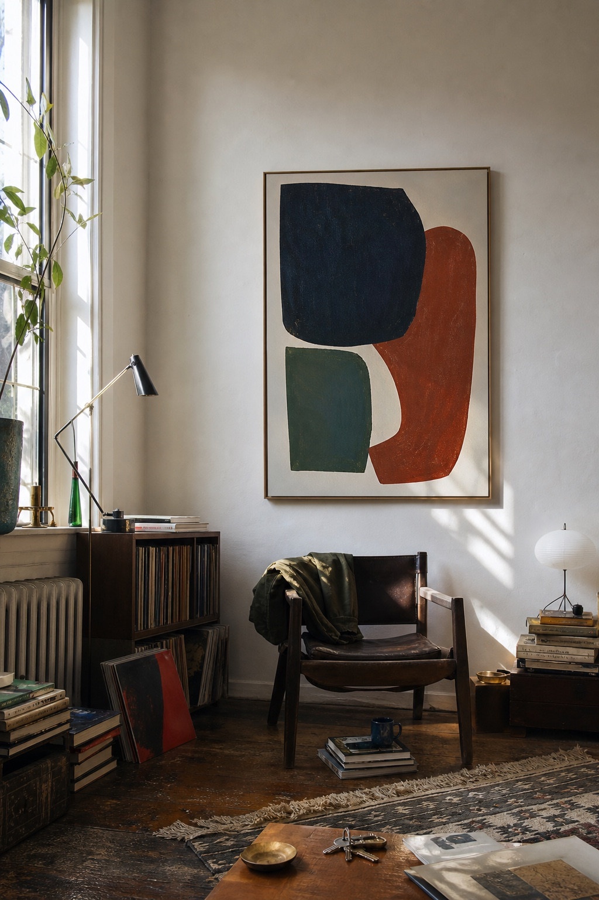
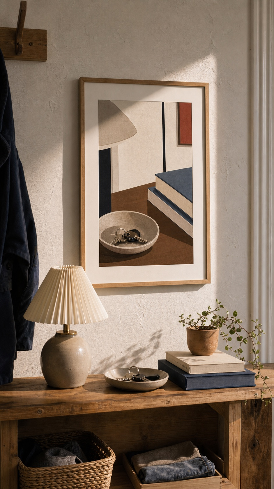
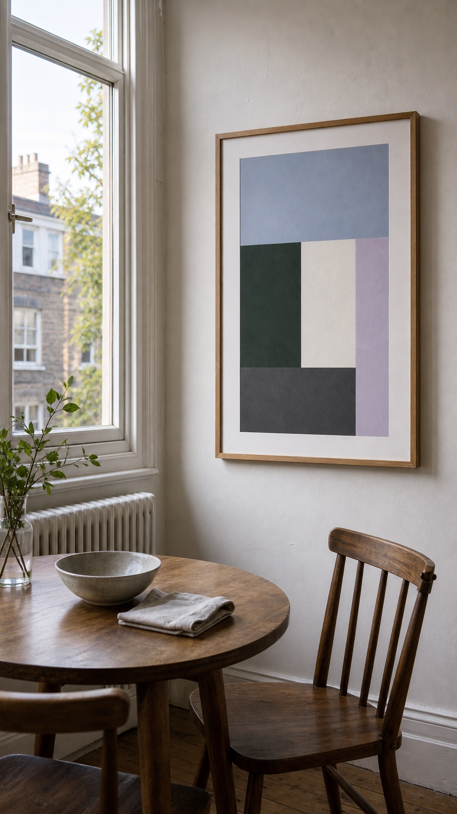
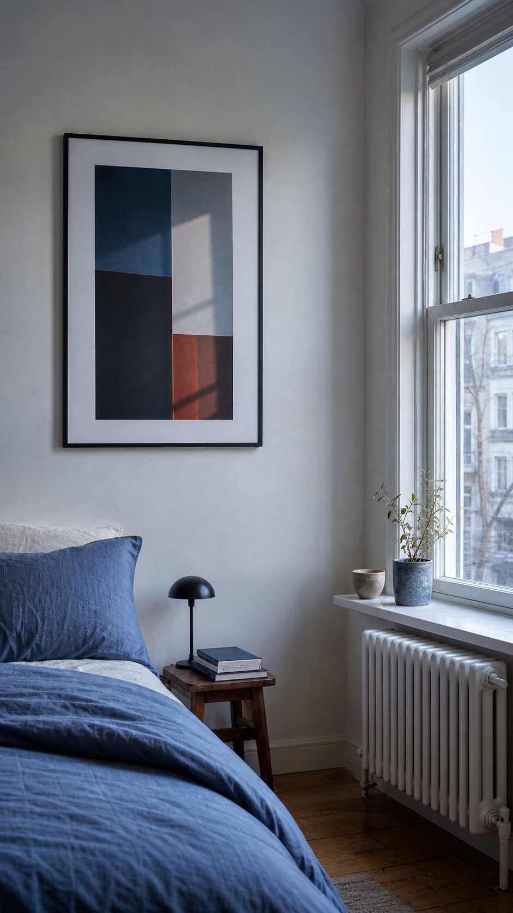
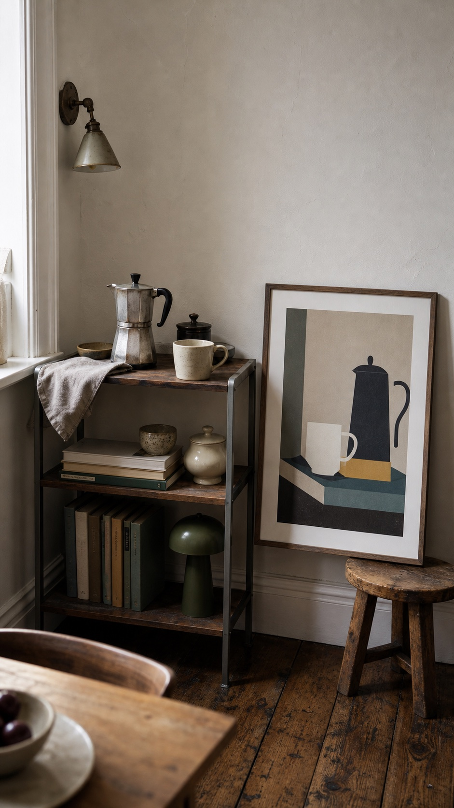
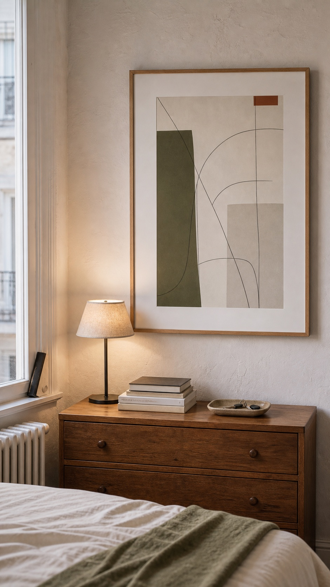
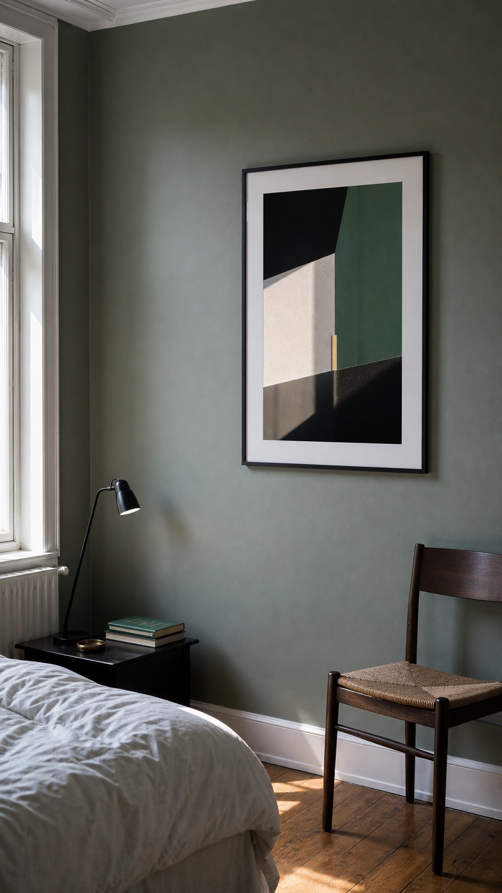

ELURA CULTURE FORECAST 01
읽기 시작취향을 공간에 풀어내는 시대
좋아하는 것은 많은데, 왜 내 방에 둘 작품은 고르기 어려운가

좋아하는 것은 많은데, 왜 내 방에 둘 작품은 고르기 어려운가
문제는 취향이 없는 데 있지 않다. 저장한 이미지와 기억을 지금 방의 크기·빛·가구·예산에 맞는 작품으로 좁힐 기준이 부족하다.
통계와 기술 설명에는 출처를 붙였고, 가상 사례는 실제 인터뷰와 구분했다. ELURA의 고객·국가·결과 수는 앞으로 검증할 가설로 표시했다.
가구는 다 있는데 왜 내 집 같지 않을까 / 왜 우리는 집을 나답게 꾸미고 싶어 할까 / 집 사진을 자주 보게 되면서 달라진 선택 / 처음으로 내 취향을 담는 집 / 임대 집도 지금 사는 내 집이다
예쁜 집을 많이 볼수록 고르기 어려운 이유 / 스타일 이름만으로는 내 취향을 설명할 수 없다 / 미술 지식이 없어도 작품을 고를 수 있을까 / 좋아하는 것은 많은데 고르는 기준이 없다 / 왜 저장만 하고 사지는 못할까
저장 기록으로 취향을 더 잘 알 수 있게 됐다 / 내 취향은 언제, 어떻게 만들어졌나 / AI는 방 사진에서 무엇을 볼 수 있나 / 한 점만 주문해도 만들 수 있는 생산 방식 / AI가 많이 만들수록 고르기는 더 어렵다 / 상품 추천과 공간 맞춤은 무엇이 다른가 / 개인화를 위해 어떤 정보까지 받아야 할까
왜 첫 고객을 여성으로 가정했나 / 나이보다 이사와 독립이 구매를 만든다 / 왜 미국·캐나다·영국부터 시험하나 / 출시 국가는 같아도 방은 모두 다르다 / 고객 가설은 데이터에 따라 바꿔야 한다
좋아하는 기억을 작품의 색과 구성으로 바꾸는 법 / 세 사례에서 첫 제안이 빗나간 이유 / 작품을 고르기 전에 방에서 확인할 일곱 가지 / 왜 결과를 세 개만 보여 주나
디지털 이미지를 실제 작품으로 만드는 과정 / 개인화된 홈데코 서비스는 어디까지 갈 수 있나 / 내 방과 취향을 정리하는 노트
이사를 마친 뒤 작품 하나를 고르지 못하는 장면에서, 참고 이미지가 많아도 결정이 어려운 이유를 시작한다.
이사는 끝났다.
현관 옆에는 아직 접지 않은 종이 상자가 두 개 남아 있었다. 그래도 침대는 조립했고 인터넷도 연결했다. 소파는 사진에서 본 것과 거의 같은 색이었고 테이블 위에는 꽃병도 놓였다. 생활에 필요한 준비는 대체로 끝났다.
마지막으로 남은 것은 거실의 벽이었다.
그 벽이 비어 있어서 문제인 것은 아니었다. 빈 벽은 며칠쯤 참을 수 있다. 문제는 무엇을 걸어도 틀릴 것 같다는 데 있었다. 휴대전화에는 저장해 둔 방 사진이 수백 장 있었다. 추상화도 좋았고, 오래된 여행 포스터도 좋았다. 붓 자국이 큰 그림도, 여백이 많은 사진도 마음에 들었다. 좋아하는 것이 너무 많았다.
그러나 좋아하는 것과 함께 살 수 있는 것은 같은 말이 아니었다.
그녀는 작품 하나를 장바구니에 넣었다가 지웠다. 너무 무난했다. 다른 작품을 넣었다. 이번에는 너무 튀었다. 세 번째 작품은 예뻤지만 어느 카페에서 본 것 같았다. 네 번째 작품을 고를 무렵에는 처음에 무엇을 원했는지조차 흐릿해졌다. 결국 가장 확실한 선택을 했다. 아무것도 사지 않는 것이었다.
우리는 이런 일을 취향이 없어서 생긴다고 생각한다. 색을 잘 모르고, 미술을 모르고, 인테리어 감각이 부족해서 결정을 못 내린다고 여긴다. 그래서 더 찾아본다. 더 많은 방을 보고, 더 많은 스타일의 이름을 배우고, 더 많은 상품을 비교한다.
이 책의 주장은 반대다.
문제는 취향이 없는 데 있지 않다. 좋아하는 이미지는 충분하지만, 그중 무엇이 지금 내 방에 맞는지 판단할 기준이 부족하다.
지난 10여 년 동안 취향을 찾는 일은 훨씬 쉬워졌다. 마음에 드는 이미지를 저장하고, 비슷한 이미지를 추천받고, 낯선 브랜드를 발견하고, 몇 초 만에 수십 개의 방을 훑어본다. 이제 예쁜 집을 보기 위해 잡지 발행일을 기다리거나 가구 매장을 돌아다닐 필요가 없다. 참고할 자료는 이미 넘친다.
하지만 참고 자료가 많아졌다고 결정까지 쉬워진 것은 아니다.
저장한 이미지를 보면 무엇을 좋아하는지는 알 수 있다. 그러나 실제로 하나를 고르려면 벽의 크기, 빛의 방향, 이미 가진 가구의 색, 예산, 함께 사는 사람까지 고려해야 한다. 마음에 드는 이미지와 내 방에 맞는 작품 사이에는 이런 현실적인 판단이 빠져 있다.
빠져 있는 것은 좋아하는 자료에서 공통점을 찾고, 방의 크기·빛·가구·예산에 맞는 작품으로 좁혀 주는 과정이다.
좋아하는 것을 공간에 풀어낸다는 말은 대상을 그대로 그림으로 복사한다는 뜻이 아니다. 바닷가의 기억이 좋다고 해서 파도 사진부터 고르는 대신, 그때 좋았던 것이 밝은 빛인지 넓게 트인 느낌인지 잔잔한 색인지 구체적으로 살핀다. 그런 특징을 작품의 색, 선, 여백, 크기로 바꾸고 현재 방과 잘 맞는지 확인한다. 좋아하는 음악도 앨범 표지를 붙이는 데서 끝내지 않고, 빠르기와 반복, 강약을 작품 구성에 반영할 수 있다.
제품 목록에서 하나를 고르는 것만으로는 부족하다고 느끼는 사람이 늘고 있다. 자신이 오래 좋아한 것과 지금 사는 방을 함께 고려한 선택을 원하기 때문이다.
이런 서비스가 지금 가능해진 데에는 이유가 있다. 사람들이 저장한 이미지와 음악, 여행 사진이 많아졌다. AI는 글뿐 아니라 참고 이미지와 방 사진을 함께 다룰 수 있다. 주문형 생산으로 한 점도 재고 없이 제작하고 배송할 수 있다. AI 결과가 많아지면서 비교할 결과를 줄여 주는 기능도 필요해졌다.
따라서 첫 질문부터 달라져야 한다. 어떤 스타일을 좋아하세요?만 물어서는 충분하지 않다.
더 나은 질문은 이것이다.
내가 계속 좋아해 온 색과 장면은 무엇이고, 그중 지금 이 방에 잘 맞는 것은 무엇일까?
이 질문에 답하기 위해 먼저 이상한 집 하나를 들여다보아야 한다. 모든 것이 갖춰졌는데도 그 안에 사는 사람만 보이지 않는 집이다.

필요한 가구를 모두 샀는데도 집이 낯선 이유를 작품 선택과 개인적인 취향에서 찾는다.
가구와 장식을 모두 갖췄는데도 사는 사람의 취향이 보이지 않는 이유를 살펴본다.
숙박 시설의 방은 우리의 것이 아니어도 불편하지 않다. 우리는 그곳에 오래 머물 생각이 없기 때문이다. 침대보의 색이 나와 맞지 않아도 되고, 벽의 그림이 아무 의미가 없어도 된다. 그 방이 해야 할 일은 나를 표현하는 것이 아니라 하룻밤을 무사히 보내게 하는 것이다.
그런데 자신의 집이 숙박 시설처럼 느껴질 때는 문제가 달라진다.
깨끗하고 편리하다. 필요한 가구도 있다. 친구가 와서 예쁘다고 말한다. 사진을 찍으면 제법 근사하다. 그런데 혼자 남아 방을 바라보면 설명하기 어려운 이질감이 생긴다. 내 물건은 있는데 내 이야기는 없다. 잘못 꾸민 집은 아니지만, 내가 꾸민 집 같지도 않다.
이런 느낌은 차갑거나 미니멀한 집에서만 생기지 않는다. 물건이 많고 색이 화려해도 마찬가지다. 유행하는 테이블, 인기 있는 조명, 무난한 포스터를 보기 좋게 배치했지만 정작 사는 사람이 무엇을 좋아하는지는 보이지 않을 수 있다.
필요한 물건을 채우는 일과 내 취향에 맞게 고르는 일은 다르다.
필요한 물건은 목록으로 해결할 수 있다. 침대, 소파, 테이블, 수납장, 조명, 러그를 확인하고 예산 안에서 사면 된다. 취향에 맞게 고르려면 다른 정보가 필요하다. 어떤 색을 오래 좋아했는지, 어느 장소에서 편안함을 느꼈는지, 지금 가진 가구 중 무엇을 계속 쓰고 싶은지 알아야 한다.
오늘날의 유통은 첫 번째 문제를 매우 잘 해결한다. 검색창에 작은 거실 소파를 입력하면 크기, 가격, 색상, 배송일을 비교할 수 있다. 완성된 방 전체를 한 번에 구매하는 것도 가능하다. 한 이미지 속 소파와 테이블과 조명을 거의 그대로 따라 살 수 있다. 집을 기능적으로 완성하는 비용과 시간은 줄어들었다.
그 성공 때문에 두 번째 문제가 더 선명해졌다.
막 이사한 사람은 우선 침대와 식탁부터 산다. 기본적인 필요를 채우고 나면 질문이 달라진다. 무엇이 더 필요한가보다 왜 이곳이 아직 내 집 같지 않은가를 생각하게 된다.
이때 벽이 자주 마지막 문제로 남는다. 소파는 크기와 착석감, 테이블은 높이와 용도로 비교할 수 있다. 그림은 그런 기능 기준이 적다. 왜 수많은 작품 중 이것을 골랐는지 스스로 납득해야 하므로 취향에 대한 부담이 커진다.
그래서 많은 사람이 작품을 고르다가 멈춘다. 가격 때문만은 아니다. 거실에 걸면 매일 보게 되고 방문객에게도 드러난다. 잘못 골랐을 때의 후회가 옷이나 작은 생활용품보다 오래갈 것처럼 느껴진다.
모든 집이 사는 사람의 취향을 적극적으로 보여 줘야 한다는 뜻은 아니다. 집은 그저 편하게 쉬는 곳이면 충분할 수 있다. 짧게 사는 집에 돈과 시간을 많이 쓰지 않는 것도 합리적이다. 특별히 꾸미지 않는 선택도 존중해야 한다.
문제는 내 취향을 담고 싶지만 모던, 내추럴, 보헤미안 같은 스타일 분류 말고는 고를 기준이 없을 때 생긴다. 분류에 맞춰 물건을 사면 방은 보기 좋게 정리되지만, 어디서 많이 본 집처럼 느껴질 수 있다.
부족한 것은 장식이 아니라 선택의 이유다. 그렇다면 왜 우리는 집에서 이런 개인적인 의미까지 기대하게 되었을까.
취향이 없는 것이 아니다. 좋아하는 자료를 지금 방에 맞는 작품으로 좁히기 어려운 것이 문제다.
화상회의와 소셜미디어, 재택 생활이 집 꾸미기 기준에 어떤 영향을 줬는지 살펴본다.
집은 오랫동안 여러 역할을 동시에 해 왔다. 몸을 보호하는 구조물이었고, 가족이 모이는 장소였고, 노동이 이루어지는 곳이었으며, 자산이기도 했다. 새롭게 생긴 것은 집에 정체성이 있다는 생각 자체가 아니다. 사람은 오래전부터 집에 기억과 지위를 새겼다. 새로워진 것은 더 많은 사람이 더 자주, 더 의식적으로 집을 자기표현의 매체로 편집한다는 점이다.
예전의 자기소개는 대체로 몸과 말에 붙어 있었다. 무엇을 입는지, 어떤 일을 하는지, 어떤 음악을 듣는지, 어떤 사람들과 어울리는지가 한 사람을 설명했다. 이제 카메라가 일상의 거의 모든 곳에 들어오면서 집도 자기소개의 전면으로 나왔다. 영상 회의의 배경, 짧은 동영상의 촬영 장소, 온라인 중고 거래 사진의 한 귀퉁이까지 집은 의도하지 않아도 사람을 설명한다.
그래서 집은 사적인 생활공간인 동시에 다른 사람에게 자주 보이는 배경이 되었다.
소셜미디어만으로 이 변화를 설명할 수는 없다. 지금은 일하고, 운동하고, 쉬고, 사람을 만나는 일이 같은 집에서 일어난다. 주거비는 많은 가구에서 가장 큰 지출이다.〔1〕 비싼 비용을 내고 오래 머무는 만큼 집이 안전하고 편하며, 일과 휴식을 모두 하기 좋은 곳이기를 기대한다.
환경심리학은 오래전부터 주택과 집이 같은 말이 아니라고 보았다. 물리적 공간을 내 집이라고 느끼려면 사생활을 지킬 수 있어야 하고, 사람과 물건에 대한 기억이 쌓여야 하며, 내 선택을 반영할 수 있어야 한다는 연구가 있었다. 최근 주거 연구를 검토한 논문들도 장소에 대한 정체성, 애착, 의존이 중요한 요소라고 정리한다.〔2〕
이 구분은 중요하다. 소유권이 집다움을 자동으로 만들지 않기 때문이다.
누군가는 10년째 임대한 작은 아파트에 자신이 고른 물건을 하나씩 들인다. 창가의 의자는 첫 월급으로 샀고, 벽의 사진은 혼자 떠난 여행에서 찍었으며, 식탁의 흠집은 오랜 친구들과 보낸 밤에 생겼다. 반대로 큰돈을 들여 집을 샀어도 모델하우스처럼 낯설게 느끼는 사람이 있다. 소유 여부만으로 내 집이라는 감각이 생기는 것은 아니다.
내가 고르고 사용한 시간이 쌓일 때 비로소 내 집처럼 느껴진다.
오래된 머그잔을 버리지 못하는 이유는 재료나 모양 때문만이 아니다. 그 잔을 쓰던 아침과 함께 지낸 사람을 떠올리게 하기 때문이다. 집도 비슷하다. 특정 시간에 들어오는 빛, 현관문을 열었을 때 보이는 색, 자주 손이 닿는 표면이 익숙함을 만든다.
따라서 집을 개인화한다는 것은 이름을 새기거나 색상 옵션을 고르는 것보다 넓은 일이다. 내가 이미 오래 좋아한 색과 장면, 계속 간직한 물건을 지금 사는 공간에 맞게 배치하고 고르는 일이다.
하지만 시장이 말하는 개인화는 흔히 선택 항목을 늘리는 데 머문다. 색상 열두 개, 크기 여섯 개, 프레임 네 개를 고를 수 있으면 개인화되었다고 부른다. 선택권은 늘었지만 질문은 바뀌지 않는다. 어느 색을 원하세요?라고 묻지, 왜 그 색이 당신에게 남았나요?라고 묻지 않는다.
홈데코 서비스도 색상과 크기 옵션을 늘리는 데서 한 걸음 더 나아갈 필요가 있다. 고객이 무엇을 오래 좋아했고 지금 방에 무엇이 필요한지 함께 확인해야 한다.
이렇게 보면 첫 집도 처음 산 부동산만을 뜻하지 않는다. 처음으로 내 취향과 생활방식을 의식적으로 담아 본 집일 수 있다.
화상회의와 소셜미디어로 집이 자주 보이면서, 살기 편한 배치보다 사진이 잘 나오는 배치를 고르기 쉬워졌다.
화상 회의가 시작되기 직전 사람은 화면 뒤쪽부터 확인한다. 빨래가 보이는지, 침대가 너무 가까운지, 벽이 지나치게 비어 있는지 살핀다. 카메라는 방 전체가 아니라 일부만 보여 주지만 그 장면도 다른 사람에게 자주 노출된다.
집은 오래전부터 지위와 취향을 드러냈다. 새로워진 것은 그것이 더 자주, 더 많은 사람에게, 준비되지 않은 순간에도 공개된다는 점이다. 친구를 초대하지 않아도 동료가 방의 한쪽을 본다. 물건을 중고로 팔기 위해 찍은 사진에도 바닥과 벽이 따라 들어온다. 집은 의도하지 않은 자기소개가 되었다.
집은 여전히 쉬는 곳이지만 동시에 촬영 배경이 됐다. 소셜미디어를 자주 쓰면 평소 생활보다 화면에 보이는 한 구역을 더 신경 쓰게 될 수 있다.
집은 사적인 생활공간이지만 화상회의와 사진을 통해 자주 공개된다.
사진에서 좋은 방은 한눈에 읽힌다. 중심이 있고 색의 관계가 분명하며 불필요한 물건이 프레임 밖으로 사라진다. 살기 좋은 방은 그렇게 단순하지 않다. 충전기와 약봉지, 우편물과 운동 도구가 돌아다닌다. 편안한 의자가 사진에서는 둔해 보이고, 멋진 테이블은 실제 동선을 막을 수 있다.
사진이 잘 나오는 방과 살기 편한 방이 반드시 반대인 것은 아니다. 다만 정돈된 화면을 유지하려고 자주 쓰는 물건을 매번 숨겨야 한다면 배치가 실제 생활에는 맞지 않는 것이다.
홈 콘텐츠의 영향은 특정 스타일을 유행시키는 데만 있지 않다. 방이 언제나 완성된 장면이어야 한다는 기대를 만든다. 하지만 실제 집은 과정이다. 의자가 임시로 옮겨지고, 계절마다 빛이 달라지며, 어느 날은 식탁이 사무실이 된다. 완성된 사진 한 장은 이 시간을 잘라 낸다.
집이 콘텐츠가 되면 선택의 기준에 타인의 시선이 들어온다. 내가 좋아하는가와 사진에서 좋아 보이는가가 경쟁한다. 친구들이 이해할 만한 작품인지, 너무 개인적이거나 이상해 보이지 않는지, 유행에 뒤처지지 않았는지를 생각한다.
손님과 함께 사는 사람을 고려하는 것은 필요하다. 문제는 사진에서 무난해 보이는 선택만 남을 때다. 설명하기 쉽고 유행하는 작품은 고르면서, 이유를 말하기 어렵지만 오래 좋아한 작품은 제외할 수 있다.
서비스는 타인의 시선을 없앨 수 없다. 대신 화면 속 낯선 사람, 가끔 오는 손님, 매일 이 벽을 보는 자신 중 누구를 우선할지 묻는다. 같은 작품도 이 답에 따라 달라질 수 있다.
집을 자주 촬영할수록 비어 있거나 어색한 배경도 자주 눈에 들어온다. 그래서 화면에 잘 잡히는 장식에 대한 수요가 커질 수 있다.
ELURA는 카메라에 잘 잡히는 작품만 추천해서는 안 된다. 촬영이 끝난 뒤에도 매일 보는 위치에서 크기와 색이 만족스러운지 확인해야 한다.
사진에서는 작게 보여도 실제 앉는 자리에서 알맞은 작품이 있을 수 있다. 평소 생활 동선과 자주 보는 위치를 우선하고, 촬영 화면은 그다음 조건으로 두는 편이 낫다.
자가가 아니어도 처음으로 내 취향을 담게 되는 시점과 그때 필요한 물건을 알아본다.
첫 집이라고 하면 보통 열쇠를 건네받는 장면을 떠올린다. 계약서에 서명하고 현관 앞에서 사진을 찍으며 집주인이 되었다고 말하는 순간이다. 그러나 집을 사는 시기는 점점 늦어지고 있고, 오랫동안 임대 주택에 사는 사람도 많다. 내 취향을 처음 담는 집이 꼭 자가일 필요는 없다.
미국에서 2025년 첫 주택 구매자의 중위 연령은 40세까지 올라갔다.〔3〕 캐나다의 25~39세 밀레니얼은 같은 나이였던 이전 세대보다 부모와 함께 사는 비율이 높고, 주거 경로도 더 다양해졌다.〔4〕 영국의 민간 임대 가구 기준으로 보면 25~34세와 35~44세가 큰 비중을 차지한다.〔5〕 이 숫자들은 세 나라의 제도와 시장이 같다는 뜻이 아니다. 공통으로 읽을 수 있는 것은 성인의 삶과 주거의 전통적인 시간표가 느슨해졌다는 점이다.
그래서 첫 집을 처음 산 집이 아니라 처음으로 내 생활과 취향을 제대로 반영한 집으로 다시 생각해 볼 수 있다.
내게 중요한 첫 집은 처음 소유한 집이 아니라, 처음으로 내 취향을 담기로 한 집일 수 있다.
내 취향을 집에 처음 담고 싶어지는 시점은 사람마다 다르다.
계약을 한 번 더 연장하면서 이곳을 잠깐 머무는 방처럼 두지 않기로 할 때가 있다. 연인과 함께 살기 시작해 두 사람 모두 편한 배치와 물건을 골라야 할 때도 있다. 이별 뒤 혼자 남은 집을 내가 좋아하는 것으로 다시 채우거나, 재택근무를 시작해 실제로 집중할 수 있는 공간을 만들 때도 마찬가지다. 오래 기다린 끝에 집을 샀지만 전에 쓰던 가구만 놓아서는 새 생활에 맞지 않을 수도 있다.
공통점은 소유 여부가 아니라 생활이 크게 바뀌었다는 점이다.
생활이 바뀌면 집에서 하는 일과 함께 사는 사람도 달라진다. 무엇을 남기고 어디에 둘지 다시 결정해야 한다. 옷장을 정리하고 가구를 옮기는 일은 달라진 생활에 집을 맞추는 과정이다.
그래서 홈데코 구매는 이사, 독립, 동거, 결혼, 이별, 출산, 이직, 재택근무 같은 생활 변화와 가까이 붙어 있다. 사람은 늘 예쁜 집을 원하지만 언제나 같은 정도로 돈과 시간을 쓰지는 않는다. 전에 고른 가구와 장식이 지금 생활에 맞지 않게 느껴질 때 다시 움직인다.
주거비가 비싸고 계약이 불안정하면 집 꾸미기를 미루기 쉽다. 반대로 당분간 이사할 수 없기 때문에 지금 사는 곳을 더 편하게 만들고 싶은 사람도 있다. 임대라서 아무것도 하지 않는 사람도 있지만, 임대이기 때문에 다음 집에도 가져갈 수 있는 작품과 조명을 고르는 사람도 있다.
작품은 이 조건에 잘 맞는다. 구조를 바꾸지 않고도 방의 중심을 바꿀 수 있다. 이사할 때 가져갈 수 있다. 가구보다 작은 비용으로 분위기를 크게 바꾸고, 기능이 적은 만큼 의미를 많이 담을 수 있다. 동시에 바로 그 이유로 고르기 어렵다. 기능적 비교가 어려워서 취향과 확신이 더 필요하다.
이들에게 필요한 것은 한 스타일로 맞춘 가구 세트보다, 오래 좋아한 것과 지금 방의 조건을 함께 비교할 수 있는 방법이다.
그런데 참고할 스타일과 이미지는 이미 충분히 많다. 왜 그 자료만으로는 실제 작품을 고르기 어려울까.
오래 살지 않을 집이라도 이동 가능한 작품과 조명으로 생활을 편하게 만들 수 있다.
임대 주택을 꾸밀 때는 현실적인 제약이 많다. 못을 박지 못할 수 있고, 계약 기간이 짧으며, 다음 집에는 지금 산 물건이 맞지 않을 수도 있다. 보증금, 원상 복구, 이사 비용을 생각하면 큰돈을 쓰지 않는 편이 합리적이다.
실제로 몇 달만 머문다면 최소한의 가구로 사는 편이 낫다. 하지만 1년짜리 계약을 여러 번 연장하면 잠시라고 생각했던 기간이 몇 년이 된다. 그동안 불편한 배치와 빈 벽을 그대로 두는 것이 항상 가장 경제적인 선택은 아니다.
벽에 작품 한 점을 건다고 주거 불안이 해결되지는 않는다. 그래도 매일 보는 공간을 조금 더 편하게 만들 수는 있다. 중요한 것은 집의 소유권이 아니라 앞으로 얼마나 오래 살지, 이사할 때 무엇을 가져갈 수 있는지, 작은 비용으로 생활이 얼마나 나아지는지다.
자가를 마련할 때까지 집 꾸미기를 모두 미룰 필요는 없다. 지금 쓰고 다음 집에도 가져갈 수 있는 것부터 고르면 된다.
임대 집에서는 구조를 영구히 바꾸기보다 흔적을 적게 남기고 옮길 수 있는 방법이 적합하다. 작은 작품, 패브릭, 조명, 책, 프레임은 다음 집에서도 다시 쓸 수 있다. 벽 재질에 맞는 무타공 부착 방식과 가벼운 프레임도 함께 확인해야 한다.
새 도시의 낯선 방에 예전 집에서 보던 그림을 걸면 익숙한 색과 장면을 다시 볼 수 있다. 가구 배치가 아직 끝나지 않았어도 한곳은 빠르게 편안해진다. 이사할 때마다 새 장식을 전부 사는 것보다 비용도 줄일 수 있다.
그렇다고 추억이 있는 물건을 모두 보관할 필요는 없다. 다음 집에도 실제로 쓰고 싶은지, 보관과 운반 비용을 감수할 만큼 자주 보는지 따져야 한다. 오래됐다는 이유만으로 남기면 수납만 차지할 수 있다.
집을 나답게 만들라는 조언이 무조건 새 물건을 사라는 권유가 되어서는 안 된다. 주거비가 소득의 큰 부분을 차지하고 계약 종료 시점도 불확실하다면 장식 예산을 낮추는 것이 우선이다. 서비스도 사지 않아도 되는 경우를 분명히 알려야 한다.
방이 어색할 때 가장 먼저 할 일은 구매가 아닐 수 있다. 시선을 막는 가구를 옮기고, 흩어진 물건을 한곳에 모으고, 사용하지 않는 장식을 치우는 것만으로도 달라진다. 새로 추가하기 전에 재배치와 제거부터 시험해 볼 수 있다.
제품을 제안할 때는 임차인의 벽 재질에 맞는 부착 방식, 작은 공간에 맞는 규격, 다시 포장할 수 있는 프레임, 지역별 배송과 반품 비용을 함께 보여 줘야 한다. 좋은 취지라도 설치와 반품이 불편하면 다시 이용하기 어렵다.
어떤 사람은 임대 주택에 아무것도 걸지 않는 편을 선택할 것이다. 그것도 존중해야 한다. 이 서비스의 목표는 모든 벽을 채우는 것이 아니라, 작품이 필요한지부터 판단하도록 돕는 데 있다.
임대 집을 한 번에 완성할 필요는 없다. 오래 머물 가능성이 생겼을 때, 다음 집에도 가져갈 수 있고 지금 생활을 실제로 편하게 만드는 물건부터 하나씩 고르면 된다.

참고 이미지는 많아졌지만 벽 크기와 빛, 가구, 예산을 함께 비교할 기준은 부족하다.
예쁜 집을 많이 저장할수록 실제 방에 둘 작품을 고르기 어려워지는 이유를 설명한다.
잠들기 전 열어 본 방 하나가 마음에 든다. 천장이 높고, 오후의 빛이 길게 들어오고, 짙은 초록색 의자 옆에 작은 그림이 걸려 있다. 저장한다. 손가락을 한 번 더 움직이면 비슷한 방이 나온다. 이번에는 벽이 분홍색이다. 저장한다. 다음 방에는 낮은 소파와 커다란 추상화가 있다. 그것도 저장한다.
몇 분 뒤 저장 목록에는 서로 전혀 다른 스타일의 방 열두 개가 쌓인다.
산장, 파리의 오래된 아파트, 해변의 흰 집, 창고를 개조한 스튜디오가 한 보드에 섞인다. 화면에서는 모두 멋져 보인다. 하지만 실제로 꾸밀 수 있는 방은 하나뿐이다. 천장은 낮고 창은 북쪽을 향하며, 이미 산 회색 소파는 예상보다 크다.
이미지 플랫폼은 참고할 방을 보여 주고 저장하게 하는 일을 매우 잘 해냈다. 어려움은 그다음 단계에서 생긴다.
Pinterest는 2026년 1분기에 전 세계 월간 활성 이용자 6억 3,100만 명과 월간 검색 800억 건 이상을 보고했다. 검색의 약 절반은 상업적 성격을 띤다고 밝혔다.〔6〕 이 숫자가 보여 주는 것은 특정 플랫폼의 크기만이 아니다. 사람에게는 보고, 저장하고, 계획하고, 언젠가 구매하려는 거대한 행동이 이미 있다는 뜻이다.
과거에는 잡지 편집자가 골라 준 집을 보거나, 매장에 진열된 상품과 전문가가 제시한 견본에서 골라야 했다. 지금은 작은 도시의 임대 아파트에서도 세계 곳곳의 방을 볼 수 있다. 낯선 작가와 독립 브랜드를 발견하고, 이전에는 이름조차 몰랐던 색과 재료를 배운다.
이것은 분명한 진보다. 더 많은 사람이 아름다움에 접근하고 자기 취향을 탐색하게 되었다.
더 많은 사람이 좋은 공간을 보고 배울 수 있게 됐지만, 그 이미지를 자기 집에 적용하는 일까지 쉬워진 것은 아니다.
화면 속 방은 촬영하기 좋은 시간의 빛을 골라 정돈한 결과다. 생활용품은 화면 밖으로 치우고, 광각으로 더 넓어 보이게 찍기도 한다. 건축과 가구까지 이미 맞춰진 사진에서 의자나 그림 하나만 골라 내 방에 들여도 같은 분위기가 날 것이라고 기대하기 쉽다.
하지만 같은 물건도 주변 색과 빛, 방의 크기에 따라 전혀 다르게 보인다.
같은 주황색 의자도 흰 벽과 짙은 나무 바닥 사이에서는 따뜻해 보이지만, 붉은 바닥과 노란 조명 아래에서는 색이 지나치게 강할 수 있다. 같은 사진도 좁은 복도에서는 눈에 잘 띄지만 큰 소파 위에서는 너무 작아 보인다. 상품 사진만 봐서는 이런 차이를 판단하기 어렵다.
영감 플랫폼은 무엇을 좋아할 수 있는가를 탁월하게 보여 준다. 그러나 이것이 지금 내 방에서 어떻게 작동할 것인가에는 제한적으로 답한다. 그 질문에는 방의 사진뿐 아니라 그 사람이 이미 가진 것, 바꾸지 못하는 것, 중요하게 여기는 것까지 필요하기 때문이다.
그래서 저장은 결정을 돕기도 하지만 결정을 미루는 방법이 되기도 한다. 작품을 사면 하나를 고르고 나머지는 포기해야 한다. 저장은 아무것도 포기하지 않은 채 나중으로 넘길 수 있다. 자료는 계속 늘지만 어느 것이 실제 방에 필요한지는 더 흐려진다.
이것을 플랫폼의 잘못이라고 말할 수는 없다. 이미지 플랫폼은 발견과 저장에 강하다. 벽 치수와 기존 가구, 예산까지 반영해 구매를 결정하는 것은 다른 문제다.
참고 이미지는 필요하지만, 그것만으로 선택 기준이 생기지는 않는다.
그동안 많은 서비스는 마음에 드는 것이 없으면 더 많이 보여 주면 된다고 생각했다. 그러나 선택지가 늘수록 비교해야 할 색, 크기, 가격, 분위기도 함께 늘어난다. 예쁜 것을 알아보는 눈은 좋아졌지만 내 방에 걸 하나를 고르는 일은 더 어려워질 수 있다.
더구나 추천 이미지가 많아질수록 몇 가지 인기 스타일이 반복해서 보인다. 그러다 보면 자신의 취향도 카탈로그에 있는 스타일 이름으로만 설명하게 된다.
Pinterest Q1 2026 Earnings Presentation 〔6〕
재팬디·미드센추리 같은 스타일 이름의 장점과 한계를 실제 선택 사례로 살펴본다.
당신의 인테리어 스타일을 찾아보세요.
질문은 친절하다. 몇 장의 이미지 중 마음에 드는 것을 고르면 결과가 나온다. 미드센추리 모던, 스칸디나비안, 재팬디, 보헤미안, 인더스트리얼. 이름을 얻는 순간 안도감이 생긴다. 혼란스러웠던 선호가 하나의 폴더에 정리된다. 이제 무엇을 검색해야 하는지 알 것 같다.
스타일 이름은 복잡한 취향을 빠르게 설명하는 데 유용하다.
한 단어 안에 시대, 재료, 형태, 색, 브랜드, 생활방식의 묶음을 담는다. 판매자는 상품을 분류할 수 있고, 구매자는 낯선 영역을 빠르게 탐색할 수 있다. 디자이너와 고객이 공통의 출발점을 갖게 된다. 스타일 이름이 없었다면 모든 대화는 훨씬 오래 걸렸을 것이다.
문제는 그 분류가 한 사람의 취향을 전부 설명한다고 믿을 때 생긴다.
한 사람은 오래된 목재의 표면을 좋아하면서도 장식적인 가구는 싫어할 수 있다. 강한 원색을 좋아하지만 집에서는 차분하게 쉬고 싶을 수도 있다. 여행할 때는 붐비는 도시를 즐기고, 집에서는 물건이 적은 방을 편하게 느낄 수 있다. 사람의 취향은 한 스타일로 깔끔하게 정리되지 않는다.
상품 분류에는 경계가 필요하다. 판매자는 각 물건을 어느 카테고리에 넣을지 정해야 한다. 하지만 사람은 할머니 집의 자개장과 최신식 금속 조명을 동시에 좋아할 수 있고, 사막의 색과 북유럽 가구를 한 방에 두고 싶을 수도 있다. 여러 시기와 장소에서 취향이 만들어졌으니 서로 다른 선호가 섞이는 것은 자연스럽다.
카탈로그는 우리에게 물건을 고르는 법을 가르쳤지만, 자신을 읽는 법까지 가르치지는 않았다.
특정 스타일의 규칙을 정확히 지킨 방은 조화롭고 사진도 잘 나온다. 하지만 왜 이 그림을 골랐는지, 이 색이 무엇을 떠올리게 하는지 물으면 뚜렷한 이유가 없을 수 있다. 분류에는 잘 맞아도 사는 사람에게 특별한 선택은 아닌 것이다.
유행을 비판하는 것은 쉽다. 모두가 비슷한 소파를 사고 같은 포스터를 건다고 비웃을 수도 있다. 그러나 대량 유통과 카탈로그 덕분에 좋은 디자인을 합리적인 가격에 살 수 있게 됐다. 대중적인 물건을 사는 것 자체가 문제는 아니다. 왜 골랐는지 알고 기존 물건과 잘 조합하면 같은 의자도 집마다 다르게 쓰인다.
개성은 희귀한 물건을 많이 사는 데서 생기지 않는다. 평범한 물건이라도 나에게 필요한 이유를 알고 배치할 때 드러난다.
그럼에도 시장은 계속 당신과 비슷한 사람들이 산 것을 추천한다. 추천 시스템은 과거의 집단 행동에서 다음 선택을 예측한다. 이 방식은 편리하고 자주 정확하다. 그러나 비슷한 사람이 산 것을 반복해서 보여 주면 발견은 어느 순간 수렴이 된다. 추천은 나를 알아보는 듯하다가, 나를 이미 존재하는 집단의 평균으로 되돌려 놓는다.
그 결과 나만을 위한 추천을 많이 받을수록 비슷한 연령과 관심사를 가진 사람들의 방과 닮아 갈 수도 있다.
이 방법은 스타일 분류를 없애려는 것이 아니다. 나는 재팬디를 좋아한다에서 멈추지 않고, 그중 무엇을 좋아하는지 더 구체적으로 확인하는 과정이다. 낮은 가구인지, 절제된 색인지, 손으로 만든 듯한 표면인지, 비어 있는 공간인지 나눠 본다. 그래야 다른 스타일의 상품도 같은 기준으로 비교할 수 있다.
스타일 이름은 검색을 시작할 때 유용하지만 최종 구매 기준으로는 부족하다.
취향이 없는 것이 아니라, 좋아하는 여러 자료에서 공통점을 찾고 실제 구매 기준으로 정리하기 어려운 것일 수 있다.
작품을 고르는 순간 취향이 시험처럼 느껴진다. 그러나 함께 살 작품을 고르는 능력과 미술사를 설명하는 능력은 다르다.
가구 매장에서는 소파에 앉아 볼 수 있다. 조명은 켜 볼 수 있고 그릇은 들어 볼 수 있다. 작품은 무엇을 기준으로 비교해야 할지 모호하다. 추상적이다, 세련되었다, 느낌이 좋다는 말만 반복하다 보면 잘못 고를까 걱정된다.
미술 시장에서는 전문 지식과 사회적 지위가 함께 작용해 왔다. 작가의 경력, 사조, 재료, 희소성과 가격은 작품을 이해하는 중요한 정보지만 초보자에게는 진입 장벽이 되기도 한다. 모르면 사면 안 될 것 같고, 쉽게 좋다고 말하면 순진해 보일 것 같다.
벽에 걸 작품을 고르는 데 미술 지식이 필요 없다고 말하면 반대의 과장이 된다. 작품의 출처와 작가, 재료와 권리를 아는 것은 중요하다. 다만 그 지식이 있어야만 무엇과 함께 살고 싶은지 알 수 있는 것은 아니다.
미술사를 설명하지 못해도 매일 보고 싶은 작품은 고를 수 있다.
작품을 보고 좋다고 느끼면 그 감정을 즉시 정당화하려 하지 않아도 된다. 먼저 시선이 어디에 머무는지 본다. 색인가, 빈 곳인가, 선의 속도인가, 화면의 무게인가. 좋음은 막연하지만 시선은 구체적인 행동을 한다.
다음으로 어느 거리에서 보기 좋은지 확인한다. 가까이서 세부를 보고 싶은지, 멀리서 전체 구도를 보는 편이 좋은지, 오래 봐도 피곤하지 않은지 살핀다.
마지막으로 매일 봐도 괜찮을지 생각한다. 전시장에서 잠깐 강렬한 작품과 거실에서 오래 보는 작품은 다를 수 있다. 새로움이 줄어든 뒤에도 남을 색과 구성이 있는지 확인한다.
작가가 의도한 의미와 관람자가 느끼는 의미는 다를 수 있다. 작품의 제작 배경과 작가 설명을 확인하면서도 개인적인 기억을 떠올릴 수 있다. 다만 자신의 느낌이 작가의 의도를 대신한다고 주장해서는 안 된다.
생성형 AI로 만든 작품도 개인 자료가 들어갔다는 이유만으로 좋은 작품이 되지는 않는다. 구성, 인쇄 품질, 다른 작품과의 유사성, 오래 볼 수 있는지를 따로 평가해야 한다.
그래서 ELURA는 이미지 생성과 최종 선정을 분리해야 한다. 많이 만들 수 있다는 사실과 실제로 걸 만하다는 판단은 다르다. 결과를 줄이고 유사성을 확인하며 인쇄 샘플과 방 미리보기를 검수해야 한다.
온라인 플랫폼 덕분에 더 많은 작가와 작품을 보고 가격도 쉽게 비교할 수 있다. 하지만 작품을 많이 볼 수 있다고 해서 고르기도 쉬워지는 것은 아니다. 비교 대상이 늘면 모르는 용어와 정보도 더 많이 보일 수 있다.
전문용어를 없앨 필요는 없지만 생활 기준과 연결해 설명해야 한다. 채도는 방의 조명에서 색이 얼마나 강해 보이는지, 여백은 작은 벽에서 얼마나 답답하지 않은지, 크기는 소파와 비교해 어느 정도인지 보여 줄 수 있다.
미술 지식이 없어도 작품을 고를 수 있다. 다만 첫인상만 보지 말고 작품의 출처와 재료를 확인하고, 실제 방의 빛과 크기에서 어떻게 보일지 검토해야 한다.
좋아하는 자료, 실제 방의 조건, 예산과 제작 정보를 함께 비교하는 방법을 제시한다.
누군가에게 좋아하는 색을 물으면 파란색이라고 답할 수 있다. 그러나 파란색은 충분한 답이 아니다. 겨울 새벽의 잿빛 파랑과 한낮 수영장의 파랑은 같은 이름 아래 전혀 다른 감정을 가진다. 광택 있는 금속 위의 파랑과 바랜 천의 파랑도 다르다. 색의 이름만으로는 그 사람이 무엇을 좋아하는지 알 수 없다.
좋아하는 장소를 물어도 마찬가지다. 바다라는 답은 수평선의 여백을 뜻할 수도 있고, 소금기 있는 바람을 뜻할 수도 있으며, 어린 시절 가족과 보낸 시간을 뜻할 수도 있다. 어떤 사람에게 바다는 고요함이고, 다른 사람에게는 몸을 압도하는 힘이다.
같은 단어를 써도 좋아하는 이유는 사람마다 다르다.
우리는 자신이 좋아하는 사물의 목록을 어느 정도 알고 있다. 문제는 그 목록에서 반복되는 특징을 찾고 실제 구매 결정으로 바꾸는 일이다. 이때 세 가지 정보가 필요하다.
첫째는 사람이 좋아한다고 고른 자료다. 장소, 음악, 기억, 색, 물건, 저장 이미지가 여기에 들어간다.
둘째는 방의 조건이다. 빛, 벽의 크기와 비율, 재료, 기존 가구, 주로 보는 거리 등을 확인해야 한다.
셋째는 구매 조건이다. 예산, 제작 크기, 배송, 반품 가능 여부를 알고 여러 결과를 비교해야 한다.
이 세 가지 정보를 한 번에 놓고 비교하면 작품을 고를 기준이 생긴다.
좋아하는 자료 + 방의 조건 + 구매 기준을 함께 본다.
예를 들어 한 사람이 교토의 작은 골목을 좋아한다고 하자. 가장 단순한 방법은 골목 사진을 크게 인쇄하는 것이다. 하지만 빗물에 어두워진 돌, 낮은 처마, 안쪽에서 새어 나오는 따뜻한 빛이 특히 좋았다면 다른 작품도 가능하다. 어두운 무광 표면과 작은 밝은 면을 대비시키고, 좁은 골목처럼 세로로 긴 구성을 고를 수 있다.
같은 기억을 바탕으로 해도 방에 따라 결과는 달라져야 한다. 짙은 나무와 노란 조명이 있는 방에 갈색과 주황색을 더하면 답답해질 수 있다. 흰 벽과 금속 가구가 많은 방에는 작은 따뜻한 색이 잘 보일 수 있다. 개인적인 의미와 방의 조화를 모두 확인해 강도와 비율을 조절해야 한다.
작품 이미지만 만들고 끝내면 실제로 걸면 괜찮을까, 곧 싫증 나지 않을까라는 질문이 남는다. 어떤 자료가 결과에 반영됐는지 설명하고, 실제 방에 놓인 크기를 미리 보여 주며, 서로 다른 방향을 비교할 수 있어야 구매 판단까지 이어진다.
이 방법은 예술가나 인테리어 디자이너를 한 번의 클릭으로 대체하겠다는 약속이 아니다. 고객이 좋아한다고 고른 자료, 실제 방의 조건, 제작과 구매 정보를 한 과정에서 비교하도록 돕자는 제안이다.
몇 개의 질문으로 한 사람의 취향을 완벽하게 알아낼 수는 없다. 그럴 필요도 없다. 한 가지 결과를 정답처럼 내놓기보다, 입력 자료와 연결되는 몇 가지 방향을 보여 주고 사용자가 수정하거나 거절할 수 있게 하면 된다.
그런데 왜 이 일이 이제야 제품의 형태로 가능해졌을까.
이런 서비스가 가능해진 첫 번째 이유는 저장 이미지와 음악, 여행 사진 같은 개인 기록이 많아졌기 때문이다.
저장 버튼은 취향을 발견하게 했지만, 때로는 선택하지 않고도 선택한 듯한 기분을 준다.
저장에는 작은 성취감이 있다. 아직 사지 않았고 방도 달라지지 않았지만, 미래의 자신을 위해 무언가를 해 둔 느낌이 든다. 보드가 정리될수록 취향도 정리된 것 같다. 그러나 저장한 이미지가 늘어나는 속도와 실제 집이 달라지는 속도는 대개 같지 않다.
저장은 행동의 시작이면서 행동의 대체물이 될 수 있다. 운동 영상을 모은다고 몸이 움직이지 않는 것처럼, 방 사진을 모은다고 공간이 저절로 편집되지는 않는다. 차이는 저장한 뒤 어떤 질문이 이어지느냐에 있다. 이 이미지가 좋다는 확인에서 끝나는가, 아니면 무엇이 좋고 내 방에서는 어떻게 달라져야 하는지까지 가는가.
사람이 저장을 멈추지 못하는 이유를 게으름으로 설명하면 중요한 것을 놓친다. 저장은 불확실성을 관리하는 저비용 행동이다. 작품을 사면 하나를 선택하고 나머지를 포기해야 한다. 저장은 아무것도 포기하지 않는다. 모든 가능성을 미래에 남겨 둔다.
저장은 선택을 미룰 수 있게 한다. 아무것도 포기하지 않아도 되기 때문이다.
저장 목록에는 현재의 취향과 앞으로 살고 싶은 모습이 섞여 있다. 햇빛이 긴 거실은 여유로운 오후를, 정돈된 책상은 집중하는 생활을, 큰 식탁은 친구를 자주 초대하는 생활을 떠올리게 한다. 하지만 그 생활을 실제로 원하는지와 사진이 예쁜지는 다른 문제다.
이 둘을 구분하지 않으면 실제 방은 역할이 너무 많아진다. 조용히 쉬는 곳이면서 창의적인 스튜디오이고, 사람을 초대하는 장소이면서 완벽히 정돈된 배경이어야 한다. 서로 다른 미래를 한 방에 모두 넣으려 하면 어떤 선택도 충분하지 않게 느껴진다.
저장 이미지를 활용하려면 먼저 목적을 나눈다. 지금 살고 싶은 방인지, 언젠가 경험하고 싶은 방인지, 보기만 해도 좋은 방인지, 다른 사람을 위한 참고인지 구분한다. 그래야 실제 구매에 쓸 자료가 줄어든다.
수집의 단계에서는 비슷한 이미지를 더 찾는 일이 도움이 된다. 반복이 보이기 때문이다. 편집의 단계에서는 반대가 필요하다. 비슷한 것들을 줄이고 차이를 비교해야 한다. 왜 이 이미지는 남고 저 이미지는 빠지는지 설명하는 순간 취향은 목록에서 기준으로 바뀐다.
좋은 편집은 가장 예쁜 이미지를 남기는 일이 아니다. 가장 많은 것을 설명하는 이미지를 남기는 일이다. 한 장이 빛과 색과 여백에 관한 선호를 동시에 보여 준다면, 비슷한 역할을 하는 열 장보다 유용하다. 취향 자료의 품질은 개수보다 정보 밀도에 달려 있다.
또한 반대 사례가 필요하다. 좋아하지 않는 방 세 장을 고르고 정확히 무엇이 불편한지 말해 보면 경계가 생긴다. 색이 싫은지, 가구가 너무 정렬된 것이 싫은지, 장식이 과한지, 사람이 살지 않는 것처럼 보여서 싫은지. 취향은 좋아함만으로는 흐릿하고, 거절의 이유까지 있을 때 선명해진다.
결정은 완전한 확신 뒤에 오는 것이 아니다. 충분한 기준과 감당 가능한 위험이 만날 때 온다. 작품을 실제 방에 미리 놓아 보는 일, 여러 크기를 비교하는 일, 왜 이 방향이 제안되었는지 읽는 일은 위험을 줄인다. 반품과 제작 정보를 명확히 아는 것도 감정적 확신만큼 중요하다.
이미지 플랫폼이 발견과 저장을 맡는다면 공간 맞춤 서비스는 이미 모인 자료를 줄이고 실제 방에 적용하도록 도와야 한다. 저장의 끝에 구매가 반드시 있을 필요는 없다. 재배치로 충분하다는 결론도 유효하다.
좋은 서비스는 사용자의 마음을 더 잘 안다고 주장하지 않는다. 이미 저장한 자료를 다시 비교하게 하고, 무엇이 반복되는지와 무엇을 제외할지 보여 줘 구매 기준을 정리하도록 돕는다.

저장 기록, 방 사진을 분석하는 AI, 한 점씩 만드는 생산망, 결과를 줄여 주는 서비스가 함께 갖춰졌다.
저장 이미지와 음악, 여행 사진에서 실제 취향을 확인할 때 필요한 질문을 다룬다.
사람은 자신을 설명하는 데 서툴다. 특히 취향 앞에서 그렇다.
어떤 분위기를 좋아하세요?라고 물으면 많은 사람이 따뜻하지만 답답하지 않고, 심플하지만 너무 비어 보이지 않는다고 답한다. 모순처럼 들리지만 원하는 바는 분명하다. 문제는 이 말을 색, 크기, 구도 같은 구체적인 선택으로 바꾸기 어렵다는 데 있다.
말보다 저장 기록이 더 구체적인 정보를 줄 때가 있다.
몇 년 동안 저장한 이미지에는 반복되는 빛이 있다. 여행 사진에는 자주 프레임 안에 들어오는 재료가 있다. 플레이리스트에는 특정한 속도와 밀도가 있다. 좋아하는 옷에는 자주 손이 가는 색과 질감이 있다. 말로는 아무거나 괜찮다고 하는 사람도 실제 선택에서는 아무거나 고르지 않는다.
취향이 새로 생긴 것이 아니라, 확인할 수 있는 기록이 많아졌다.
필름 사진 시절에도 사람은 좋아하는 장면을 찍고 잡지 페이지를 오려 보드에 붙였다. 지금은 한 번의 터치로 이미지가 쌓인다. 음악, 장소, 상품, 방 사진이 여러 서비스에 오랜 기간 저장된다.
이 자료는 한 번의 설문보다 풍부할 수 있지만, 저장 목록 전체를 곧바로 취향이라고 볼 수는 없다.
저장한 이미지가 모두 원하는 삶을 뜻하지는 않는다. 어떤 이미지는 순수한 호기심이고, 어떤 것은 선물을 위한 참고이며, 어떤 것은 그날의 기분이다. 사람은 자신이 실제로 살고 싶은 방이 아니라 잠시 보고 싶은 방을 저장하기도 한다. 알고리즘이 반복해서 보여 줘 익숙해진 이미지를 좋아한다고 착각할 수도 있다.
따라서 자료를 많이 모으는 것보다 각 자료를 왜 골랐는지 확인하는 일이 중요하다.
왜 이것을 저장했는가. 여기서 무엇이 가장 먼저 보였는가. 이 장소를 그리워하는가, 아니면 그곳에서의 자신을 그리워하는가. 이 색을 방 전체에 원하는가, 작은 지점으로 원하는가. 좋아하지만 함께 살고 싶지는 않은 것은 무엇인가.
이런 질문을 거치면 단순한 저장과 실제 선호를 어느 정도 구분할 수 있다.
여기서 개인정보와 신뢰의 문제가 생긴다. 저장 이미지와 방 사진에는 여행, 가족, 기억, 구매력, 생활 환경이 드러날 수 있다. 서비스가 기술적으로 접근할 수 있다고 해서 마음대로 사용해도 되는 것은 아니다. 필요한 자료만 받고, 어디에 쓰는지 설명하며, 사용자가 언제든 삭제할 수 있어야 한다.
목표는 저장 기록만으로 사람을 단정하는 것이 아니다. 사용자가 자신의 선택을 더 구체적으로 설명하도록 돕는 것이다.
최근까지 컴퓨터는 사용자가 쓴 설명과 여러 참고 이미지, 실제 방 사진을 한꺼번에 다루기 어려웠다. 이제 멀티모달 AI가 이 자료들을 함께 분석할 수 있게 되면서 제품으로 구현할 가능성이 커졌다.
오래 좋아한 것과 최근에 좋아하게 된 것을 나눠 보면, 계속 유지할 취향과 새로 시험할 취향을 구분할 수 있다.
옷장을 열면 한 사람의 취향이 보일 것 같지만 실제로는 여러 사람이 나온다. 직장에 다니기 시작한 사람, 여행을 자주 하던 사람, 검은 옷만 입던 사람, 갑자기 밝은 색을 산 사람이 같은 옷걸이에 매달려 있다. 방도 마찬가지다.
취향을 하나의 고정된 스타일로 보면 시기마다 다른 선택이 모순처럼 보인다. 하지만 직장, 여행, 함께 산 사람, 주거 형태가 바뀌면 필요한 색과 물건도 달라지는 것이 자연스럽다.
가장 오래된 선호만 진짜 취향인 것은 아니다. 오래 반복한 것과 최근 생긴 것을 나란히 놓고, 앞으로도 유지할 것과 새로 시험할 것을 구분하면 된다.
예전 선택과 지금 선택이 다르다면 취향이 없는 것이 아니라 생활이 달라진 것이다.
사람은 자신을 미니멀하다고 말하면서 작은 물건을 많이 모을 수 있다. 밝은 색을 좋아한다고 말하지만 실제 구매는 늘 어두운 색일 수 있다. 말이 거짓이라서가 아니다. 이상적인 자아와 편안한 자아, 보는 취향과 사는 취향이 다르기 때문이다.
말로 설명한 취향은 스스로 바라는 모습을 보여 주고, 실제 구매 기록은 예산과 공간 제약 안에서 편하게 고른 것을 보여 준다. 둘 중 하나가 거짓인 것은 아니다. 차이가 크다면 강한 색을 작은 면적으로 먼저 시험하는 식으로 제안할 수 있다.
예를 들어 선명한 원색 이미지를 많이 저장하지만 방에는 무채색만 둔 사람이라면 원색 전체를 큰 작품으로 제안하기 전에 두려움의 크기를 확인한다. 작은 면적의 강한 색, 차분한 바탕 속 한 지점으로 시작할 수 있다. 저장한 미래와 살아온 현재 사이의 거리를 한 번에 뛰지 않는다.
어떤 색은 색상표보다 장면으로 기억된다. 학교 복도의 초록, 오래된 주방의 노랑, 겨울 바다의 회색처럼 색과 시간이 붙어 있다. 같은 초록이라도 누구에게는 안정이고 누구에게는 답답함이다.
그래서 색 질문은 좋아하는 색이 무엇인가에서 끝나면 안 된다. 그 색을 어디에서 보았는지, 넓게 둘 때와 작게 둘 때 느낌이 어떻게 다른지, 빛을 받을 때와 어두울 때 어느 쪽이 좋은지 묻는다. 색을 감정의 고정 코드로 사용하지 않고 개인의 기억 안에서 읽는다.
음악과 장소도 마찬가지다. 장르 이름보다 빠르기와 반복 정도를, 장소 이름보다 빛과 재료를 적으면 작품의 선과 색을 정하는 데 더 유용하다.
저장 기록은 플랫폼이 먼저 보여 준 것 가운데 고른 결과다. 추천이 특정 스타일을 반복하면 익숙해서 고른 것과 원래 좋아한 것을 구분하기 어려울 수 있다.
이를 이유로 저장 자료를 버릴 필요는 없다. 대신 보이지 않은 가능성이 있었다는 사실을 기억한다. 추천 밖의 이미지, 실제 거리와 전시, 친구의 집에서 우연히 만난 요소를 함께 넣으면 자료의 편향을 줄일 수 있다.
저장 목록만 사용하면 기존 플랫폼의 추천을 그대로 반복할 수 있다. 좋아하지 않는 사례도 받고, 실제 방을 확인하며, 저장 기록과 조금 다른 세 번째 결과를 제안할 필요가 있다.
어린 시절의 기억이 중요해도 현재 방을 그 시절 모습으로 재현할 필요는 없다. 당시 좋아한 따뜻한 빛이나 반복되는 무늬만 가져와 지금 가구에 맞는 색과 구성으로 바꿀 수 있다.
목표는 숨겨진 진짜 취향을 찾아내는 것이 아니다. 지금도 좋아하는 요소를 남기고, 더는 필요하지 않은 요소를 제외해 다음 선택의 기준을 만드는 것이다.
AI가 방 사진과 참고 이미지를 함께 분석할 수 있는 범위와 직접 확인해야 할 한계를 구분한다.
빈 방 사진 한 장을 컴퓨터에게 보여 준다고 생각해 보자.
몇 년 전만 해도 기계가 잘하는 일은 사진 속 사물에 이름을 붙이는 것이었다. 소파, 창문, 테이블, 식물. 오늘날의 비전 모델은 사물뿐 아니라 형태, 색, 질감, 배치 같은 시각 요소를 분석하고, 텍스트와 여러 이미지를 함께 입력받아 새로운 이미지를 만들거나 기존 이미지를 편집할 수 있다.〔7〕 Google은 다중 이미지 결합의 예로 사물을 장면에 넣거나 색상과 질감에 맞춰 방을 다시 꾸미는 작업을 직접 제시했다.〔8〕
이 기능 덕분에 공간 맞춤 서비스를 만들 수 있는 범위가 넓어졌다.
기존 추천 시스템은 주로 사용자의 행동 기록과 상품을 연결했다. 이 상품을 본 사람이 저 상품도 봤다는 식이다. 공간 맞춤에는 실제 방 사진이 하나 더 필요하다. 취향에 맞는 작품도 벽의 크기, 주변 색, 빛과 맞지 않으면 걸었을 때 만족하기 어렵기 때문이다.
AI는 이 방 사진을 분석하고 작품을 미리 배치하는 데 쓸 수 있다.
가령 방 사진에서 비어 있는 벽의 대략적인 비율을 보고, 기존 가구의 주된 색과 재료를 파악하고, 작품을 놓았을 때 주변과 어떤 대비가 생기는지 시각화할 수 있다. 사용자가 제공한 여러 참고 이미지에서 공통적인 색과 질감을 찾고, 실제 방 안에서 서로 다른 방향을 비교해 보여 줄 수 있다.
다만 AI가 방의 의미까지 이해한다고 말해서는 안 된다.
기계가 갈색 의자와 오후의 빛을 인식한다고 해서 그 의자가 할머니의 것이었다는 사실을 아는 것은 아니다. 바다 사진을 분석한다고 해서 그 장소가 회복의 기억인지 상실의 기억인지 이해하지 못한다. 시각 모델은 이미지에서 패턴을 다루지만, 한 사람의 삶에서 무엇이 중요한지는 질문과 대화로 확인해야 한다.
AI는 사진의 색과 형태를 분석할 수 있지만, 개인적인 의미는 사용자에게 확인해야 한다.
역할을 나누면 된다. AI는 사진의 색과 비율을 빠르게 분석하고 여러 시안을 만든다. 사용자는 어떤 기억과 자료가 중요한지 말하고 결과가 마음에 드는지 판단한다. 서비스는 질문을 구성하고, 시안을 비교 가능한 수로 줄이며, 크기와 가격 등 구매 정보를 제공한다.
서비스 품질은 AI가 얼마나 눈에 띄는 그림을 만드느냐만으로 결정되지 않는다. 질문이 이해하기 쉬운지, 벽 치수와 기존 가구를 정확히 반영하는지, 결과끼리 충분히 다른지, 사용자가 제안 이유를 이해할 수 있는지도 중요하다.
기술 시연에서는 방의 색을 한 번에 바꾸고 가구를 옮기며 새 작품을 만들어 낸다. 하지만 화면의 이미지를 실제 벽에 걸려면 크기, 인쇄, 프레임, 색 재현, 가격, 배송 문제를 해결해야 한다.
결국 화면의 결과를 품질이 일정한 실물로 제작할 수 있어야 한다.
한 점씩 제작하는 주문형 생산이 맞춤 작품의 재고와 비용 구조를 어떻게 바꿨는지 살펴본다.
전통적인 대량생산은 미래의 평균적인 고객을 상상한다. 얼마나 팔릴지 예측하고, 같은 물건을 많이 만들고, 창고에 보관한 뒤, 그 물건을 원하는 사람을 찾는다. 예측이 맞으면 가격이 낮아진다. 틀리면 재고가 남는다.
개인화는 이 질서와 잘 맞지 않았다. 사람마다 다른 결과를 미리 대량으로 만들 수 없기 때문이다. 맞춤 제작은 가능했지만 대개 시간과 비용이 많이 들었다. 한쪽에는 저렴하지만 일반적인 상품이, 다른 쪽에는 특별하지만 비싼 서비스가 있었다.
주문형 생산에서는 고객이 먼저 고른 뒤 한 점씩 제작한다.
오늘날의 주문형 인쇄 서비스는 선결제 재고나 최소 주문 수량 없이 주문이 들어올 때 한 개의 제품도 생산할 수 있다고 안내한다. 일부 네트워크는 고객과 가까운 생산 파트너에게 주문을 보내는 구조도 갖추고 있다.〔9〕 모든 품질과 비용 문제가 해결되었다는 뜻은 아니다. 중요한 것은 하나의 결과를 실물로 만드는 일이 더 이상 예외적인 공예 프로젝트만은 아니라는 점이다.
이 방식은 맞춤 상품의 비용 구조를 바꾼다.
과거에는 팔릴 상품을 예상해 먼저 만들어야 했다. 이제는 고객이 결과를 고른 뒤 제작할 수 있다. 재고 부담이 줄면 소수 고객을 위한 다양한 결과도 판매할 수 있다.
하지만 주문형 생산을 마법처럼 말해서는 안 된다.
화면의 색과 종이의 색은 다르다. 프레임의 재질은 사진 한 장으로 완전히 알 수 없다. 국가별 규격과 세금, 배송비, 파손과 반품이 있다. 가까운 곳에서 생산한다고 해도 원재료와 물류의 환경 비용은 남는다. 생성된 이미지의 저작권과 원본성, 인쇄 해상도, 장기 보존성도 검토해야 한다.
이미지를 쉽게 만들 수 있을수록 인쇄물의 품질 관리는 더 중요해진다.
고객이 매일 보는 것은 파일이 아니라 종이의 표면, 유리의 반사, 프레임의 두께, 벽에서 보이는 실제 크기다. 화면에서는 좋았던 결과도 작게 인쇄하면 세부가 사라지고 조명이 반사되면 잘 보이지 않을 수 있다. 배송 뒤 실제 방에 걸었을 때까지 만족스러워야 제품이 완성된다.
여기서 기술과 제조가 만난다. 기계가 사람과 방을 읽고 결과를 만들 수 있다는 사실만으로는 시장이 생기지 않는다. 그 결과를 신뢰할 수 있는 물건으로 바꾸고, 적절한 가격과 시간 안에 전달할 수 있어야 한다.
저장 자료, 방 사진을 분석하는 AI, 한 점씩 만드는 생산망이 함께 갖춰졌다.
그런데 한 가지 문제가 더 남는다. 만들 수 있는 결과가 너무 많아졌다는 사실이다.
AI 결과가 많아질수록 비교 부담이 커지는 조건과 결과 수를 줄여야 하는 이유를 설명한다.
생성형 AI에게 따뜻하고 세련된 추상화를 요청하면 몇 초 안에 결과가 나온다. 마음에 들지 않으면 다시 만들면 된다. 색을 바꾸고, 구도를 바꾸고, 화풍을 바꾸고, 수십 번 변형할 수 있다. 과거에는 결과를 만드는 일이 비쌌다. 이제는 멈추는 일이 어렵다.
첫 번째 결과보다 두 번째가 나을 수 있다. 그렇다면 스무 번째는 더 낫지 않을까. 한 번 더 누르는 비용이 거의 없을 때, 우리는 언제 선택해야 하는지 알기 어렵다.
결과가 많으면 선택 폭은 넓어지지만 언제 멈출지는 더 모호해진다.
선택지가 많으면 언제나 나쁘다는 주장은 사실이 아니다. 사람은 다양한 선택을 원하고, 선택지가 늘면 자신에게 맞는 결과를 찾을 가능성도 커진다. 선택 과잉 연구의 결과도 모든 상황에서 같지 않다. 메타분석은 선택지의 수만이 아니라 선택의 복잡성, 과제의 난도, 자신의 선호에 대한 불확실성, 결정 목적이 과잉 효과를 좌우한다고 정리한다.〔10〕
작품 선택에는 이 조건들이 대부분 해당한다.
작품은 기능이나 성능으로 객관적으로 비교하기 어렵다. 정답이 없고, 실제 방에서 어떻게 보일지 상상해야 하며, 반품도 번거롭다. 선택지가 늘면 색, 구성, 크기, 가격, 방과의 조화를 모두 비교해야 한다.
문제는 선택지가 부족해서가 아니라 선택 기준이 부족해서 생긴다.
수백 개를 보여 주는 것보다, 서로 다른 몇 개를 이유와 함께 보여 주는 편이 결정에 도움이 될 수 있다.
AI로 계속 다시 만들 수 있으면 지금 결과를 선택할 이유가 약해진다. 이 파란색을 골라도 바로 다음 파란색을 만들 수 있다. 만족스러운 결과를 보고도 아직 보지 못한 것이 더 나을지 모른다고 생각하게 된다.
그래서 이미지의 수보다 각 결과를 제안한 이유가 중요해진다.
왜 이 색과 크기를 골랐는지, 방의 어떤 조건을 반영했는지 설명할 수 있어야 한다. 설명이 없다면 개인화라는 이름을 붙였어도 사용자가 우연히 생성된 이미지와 구분하기 어렵다.
앞으로는 얼마나 많이 만들어 주느냐보다 얼마나 비교하기 쉽게 줄여 주느냐가 중요해질 수 있다. 인기순으로 세 개를 보여 주는 것으로는 부족하다. 개인적인 기억을 더 반영한 결과, 방과 더 잘 어울리는 결과처럼 차이가 분명한 몇 가지를 제시하고 이유를 설명해야 한다.
세 개가 마법의 숫자라는 뜻은 아니다. 하나는 독단적일 수 있고, 무한은 피곤할 수 있다. 세 개는 차이를 느끼면서도 비교할 수 있는 제품 가설이다. 실제 사용자의 선택률과 만족을 통해 바뀔 수 있다.
결과를 줄이는 목적은 선택권을 빼앗는 것이 아니라 비교 부담을 낮추는 데 있다.
지금 이 서비스가 가능해진 이유는 네 가지다. 사람들은 이미 많은 이미지를 저장한다. AI는 참고 이미지와 방 사진을 함께 분석한다. 주문형 생산으로 한 점씩 제작할 수 있다. 마지막으로 많은 결과를 비교 가능한 몇 개로 줄이는 서비스에 대한 필요가 커졌다.
그렇다면 이 변화를 가장 먼저 필요로 하고, 가장 먼저 받아들일 사람은 누구일까. 여기서 우리는 조심해야 한다. 시장은 사람을 쉽게 성별과 나이로 잘라 놓지만, 문제는 그렇게 반듯하게 나뉘지 않기 때문이다.
AI는 결과를 늘린다. 서비스는 비교할 몇 개를 고르고 제안 이유를 보여 줘야 한다.
Choice overload meta-analysis, 2015 〔10〕
일반 추천은 구매 가능성을 예측한다. 공간 맞춤은 개인 자료와 실제 방을 함께 보고 크기와 색을 제안한다.
온라인 상점은 놀라울 만큼 나를 잘 안다. 어제 본 의자와 어울릴 법한 테이블을 보여 주고, 비슷한 가격대의 조명을 이어서 제안한다. 몇 번 클릭하면 화면 전체가 내가 좋아할 만한 것들로 채워진다. 그런데 방은 좀처럼 나다워지지 않는다.
추천 시스템은 이 사람이 다음에 무엇을 클릭하거나 살 가능성이 높은지 예측한다. 공간 맞춤은 사용자가 준 자료와 실제 방을 함께 보고 어떤 결과가 적합한지 비교한다. 비슷한 데이터를 쓸 수 있지만 목적이 다르다.
추천은 나와 비슷한 행동을 한 사람, 이전에 본 상품과 비슷한 상품, 함께 구매된 물건을 찾는 데 강하다. 공간 맞춤은 같은 파란색을 좋아해도 밝은 파랑과 짙은 파랑 중 무엇을 고르는지, 같은 작품이 두 방에서 얼마나 다르게 보이는지 확인한다.
일반 추천은 구매 가능성을 예측한다. 공간 맞춤은 방 사진과 개인 자료를 반영한 이유를 보여 준다.
추천이 정교해질수록 화면은 개인적으로 느껴진다. 하지만 비슷한 연령, 도시, 저장 보드, 구매 기록을 가진 집단이 본 상품을 더 정확히 보여 주는 것일 수 있다. 결과는 나에게 맞으면서 동시에 수많은 비슷한 사용자에게도 맞는다.
그래서 서로 다른 경로로 추천을 받아도 같은 소파와 포스터, 같은 색 조합을 고를 수 있다.
유사한 선택 자체가 나쁜 것은 아니다. 인기 상품은 가격과 품질 정보도 많다. 다만 클릭 가능성이 높다는 사실만으로 그 상품이 개인적인 기억과 현재 방에 가장 잘 맞는다고 볼 수는 없다.
일반 추천은 주로 사용자 기록과 상품을 연결한다. 공간 맞춤에는 실제 방 사진이 추가된다. 벽의 폭, 빛, 가구, 생활 동선에 따라 같은 상품의 적합도가 달라진다.
사용자가 좋아할 작품이 방에는 너무 어둡거나 작을 수 있다. 방과 잘 어울리지만 사용자에게 특별한 이유가 없는 작품도 있다. 두 기준 중 무엇을 더 반영했는지 결과마다 설명해야 한다.
이유가 보이면 사용자는 제안에 동의하거나 수정할 수 있다. 설명이 없으면 알고리즘이 취향을 판정한 것처럼 느껴질 수 있다.
추천은 예상한 상품을 빠르게 찾는 데 강하다. 공간 맞춤은 사용자가 전에 고르지 않은 결과도 한 가지 제안할 수 있다. 다만 새로움만 노리지 말고 어떤 저장 자료에서 색이나 구성을 확장했는지 설명해야 한다.
기존 취향과 너무 비슷하면 이미 본 것을 반복하고, 너무 다르면 개인화라고 느끼기 어렵다. 익숙한 요소 하나와 새로운 요소 하나를 함께 보여 주는 방식으로 범위를 조절할 수 있다.
온라인 상점은 클릭, 장바구니, 결제를 주로 측정한다. 맞춤 작품은 한 달 뒤에도 걸려 있는지, 이사할 때 가져가고 싶은지, 제안 이유가 기억나는지도 봐야 한다.
빠른 구매만 목표로 하면 익숙하고 무난한 결과가 유리하다. 한 달 뒤 만족도, 반품률, 실제 설치 사진과 제안 설명의 이해도를 함께 측정해야 개인화의 가치를 판단할 수 있다.
일반 추천은 많은 상품을 빠르게 줄여 주는 데 필요하다. 공간 맞춤은 그 뒤에 실제 방과 개인 자료를 더해 최종 몇 가지를 비교하게 하는 과정이다.
방 사진과 저장 이미지는 꼭 필요한 범위만 받고, 용도와 보관 기간, 삭제 방법을 분명히 해야 한다.
개인화 서비스의 가장 쉬운 약속은 당신을 안다는 말이다. 클릭과 저장, 사진과 문장을 모아 누구보다 정확한 결과를 주겠다고 말한다. 이 약속은 매력적이지만 위험하다. 사람을 잘 안다는 감각과 사람의 정보를 많이 가졌다는 사실은 같지 않기 때문이다.
취향은 사소한 정보처럼 보인다. 좋아하는 색과 장소, 음악과 방 사진이 무슨 비밀이겠느냐고 생각할 수 있다. 그러나 이 자료를 한데 모으면 생활 수준, 거주 형태, 가족 관계, 이동 경로, 개인적인 경험이 드러난다. 방 사진에는 주소가 없어도 창밖 풍경, 가족사진, 우편물, 고가의 물건이 들어갈 수 있다.
맞춤 작품을 제안하려면 개인적인 자료가 필요하다. 따라서 무엇을 받을지, 왜 필요한지, 얼마나 보관할지, 누가 접근하는지, 사용자가 어떻게 지울지를 제품 설계 단계에서 정해야 한다. 개인정보 안내는 결제 화면 아래에 붙이는 부가 문구가 아니다.
맞춤 결과에 필요하지 않은 개인정보는 받지 않고, 받은 자료의 용도와 삭제 방법을 알려야 한다.
모든 입력은 결과에 기여해야 한다. 사용자의 출생지나 정확한 주소가 작품 방향에 필요하지 않다면 받지 않는다. 방의 비율을 보기 위해 사진이 필요하더라도 사진 속 인물이나 문서를 분석할 이유는 없다. 질문의 수가 많아질수록 정교해질 것이라는 믿음도 검증해야 한다. 어떤 질문은 정보만 늘리고 선택은 돕지 못한다.
사용자가 제공하는 자료의 범위도 스스로 정할 수 있어야 한다. 가장 기억에 남는 장소를 말하기 불편하면 좋아하는 색과 음악만으로 진행할 수 있어야 한다. 이별이나 상실을 다룰 때는 서비스가 상담자처럼 행동하거나 개인 경험을 더 자세히 말하도록 유도해서는 안 된다.
동의는 가입할 때 한 번 누르는 체크박스가 아니다. 자료가 어느 단계에서 어떻게 쓰이는지 이해할 수 있어야 한다. 방 사진은 배치 미리보기에 쓰이고, 저장 이미지는 방향 제안에 쓰이며, 선택 결과는 추천 개선에 쓰일 수 있다는 차이를 분명히 보여 줘야 한다. 서로 다른 목적을 하나의 포괄적 동의로 묶을수록 신뢰는 약해진다.
개인화 시스템은 개인을 본다고 말하지만 대개 많은 사람의 과거에서 패턴을 배운다. 여기에는 역설이 있다. 나에게 맞추기 위해 나와 비슷하다고 분류된 사람들의 평균을 사용한다. 데이터에 기존의 성 역할과 미적 고정관념이 들어 있다면 결과도 그것을 반복할 수 있다.
여성 사용자에게 부드러운 색과 곡선을, 남성에게 어두운 색과 직선을 더 자주 제안한다면 기존의 성별 고정관념을 반복하는 것이다. 국가별 취향을 몇 개의 색상 팔레트로 고정하는 것도 같은 오류다. 일본은 여백, 멕시코는 원색, 북유럽은 무채색이라고 단정하면 개인의 실제 선택이 사라진다.
편견을 줄이려면 입력 자료와 결과의 연결을 살펴야 한다. 이 색이 사용자의 실제 선택에서 나왔는가, 아니면 성별과 연령에서 추정됐는가. 추천이 달라졌다면 어떤 정보가 영향을 줬는지 사용자에게 설명할 수 있어야 한다.
이미지 생성과 개인화에는 저작권과 창작자의 권리도 따라온다. 특정 작가의 이름을 지름길로 사용해 유사한 결과를 만드는 방식은 개인화의 명분으로 정당화되지 않는다. 사용자의 취향을 이해한다는 이유로 살아 있는 작가의 고유한 표현을 복제해서도 안 된다.
서비스는 작가 이름을 스타일 지시어로 쓰기보다 거친 붓질, 낮은 채도, 넓은 여백, 불규칙한 반복처럼 관찰 가능한 특성을 사용해야 한다. 결과가 특정 작품을 지나치게 닮지 않았는지 확인하고, 생성 결과의 출처와 사용 조건을 명확히 밝혀야 한다. 필요하면 인간 작가와 협업하는 방식도 열어 둔다.
사용자가 제공한 사진과 기억 역시 소유권이 모호할 수 있다. 가족사진에는 여러 사람이 있고, 저장한 이미지에는 다른 창작자의 작업이 있다. 참고 자료로 사용한다고 해서 그대로 합성하거나 복제할 권리가 생기는 것은 아니다. 입력과 출력의 거리를 설계하는 일이 필요하다.
맞춤 결과에는 사용자가 준 자료가 구체적으로 반영돼야 한다. 그렇다고 사람의 모든 정보를 받을 필요는 없다. 좋아하는 색, 참고 이미지, 방 사진처럼 결과에 직접 쓰이는 자료만으로도 충분한지 먼저 시험해야 한다.
신뢰는 완벽한 적중률보다 경계의 예측 가능성에서 생긴다. 사용자가 무엇을 제공했고, 서비스가 무엇을 했으며, 무엇을 하지 않았는지 알 수 있을 때 실패한 제안도 수정 가능한 대화가 된다. 반대로 결과는 멋지지만 자료의 사용 방식이 불투명하면 한 번의 감탄 뒤에 불안이 남는다.
좋은 개인화 서비스는 가장 많은 데이터를 모으는 서비스가 아니다. 결과에 필요한 질문만 하고, 사용자가 제안 이유를 확인하고 수정할 수 있게 하는 서비스다.

여성·28~43세·미국·캐나다·영국을 첫 조사 범위로 정한 근거와 바꿀 조건을 살펴본다.
여성을 첫 조사 대상으로 정한 공개 자료와 한계, 반드시 함께 비교해야 할 고객군을 밝힌다.
왜 여성인가?
이 질문에는 두 가지 나쁜 답이 있다.
첫 번째는 여성은 원래 집 꾸미기를 좋아한다는 답이다. 간단하고 익숙하지만 설명이라기보다 고정관념이다. 돌봄과 가사와 미적 의사결정을 여성의 본성으로 돌리면, 누가 왜 그런 역할을 맡아 왔는지 지워진다. 남성이나 성별 범주 밖의 고객이 같은 문제를 겪는다는 사실도 보지 못한다.
두 번째는 여성 시장이 크기 때문이라는 답이다. 시장 규모는 출발의 이유가 될 수 있지만, 문제와 고객이 왜 만나는지는 설명하지 못한다. 숫자가 큰 집단을 고르는 것과 강한 필요가 있는 집단을 발견하는 것은 다른 일이다.
여성을 첫 고객 가설로 둔 이유는 더 구체적이다.
이미지 저장 행동과 독립적인 주거 의사결정을 보여 주는 공개 자료에서 여성을 더 쉽게 관찰할 수 있기 때문이다.
첫째, Pinterest가 공개한 전 세계 이용자 구성은 여성 70%, 남성 30%다.〔11〕 이 수치만으로 여성이 집을 더 중요하게 여긴다고 말할 수는 없다. Pinterest에는 집뿐 아니라 패션, 음식, 여행, 뷰티, 행사 기획 자료도 많다. 공개된 두 범주의 수치가 다양한 성별 정체성을 충분히 설명하지 못한다는 한계도 있다. 다만 이미지를 저장하고 향후 구매를 계획하는 사용자를 모집할 때 여성 표본을 비교적 빠르게 만날 수 있다는 근거는 된다.
둘째, 미국 NAR의 2025년 조사에서 첫 주택 구매자 가운데 싱글 여성은 25%, 싱글 남성은 10%였다.〔12〕 이 자료는 미국의 주택 구매자만 다루므로 임차인이나 다른 국가를 대표하지 않는다. 그래도 혼자 큰 주거 결정을 내리는 여성 고객이 적지 않다는 사실은 확인할 수 있다.
셋째, 집을 새 출발, 회복, 독립, 관계 변화와 연결하는 콘텐츠에서 여성 창작자와 이용자가 자주 보인다. 다만 이 관찰은 앞의 두 통계보다 측정하기 어렵다. 실제 인터뷰와 콘텐츠 분석으로 빈도와 구매 의향을 따로 확인해야 한다.
세 자료를 종합하면 첫 조사 대상은 시각 자료를 자주 저장하고, 집에 관한 결정을 직접 내리며, 이사나 독립 같은 변화 직후에 있는 사람이다. 현재는 이 조건에 맞는 여성을 모집하기 쉽다는 뜻이지, 이 문제가 여성만의 문제라는 뜻은 아니다.
이 구분은 제품 설계에도 영향을 준다. 여성용 아트를 만들려고 하면 분홍색, 부드러운 곡선, 감성 문구 같은 고정관념에 빠지기 쉽다. 성별로 미감을 추정해서는 안 된다. 대신 저장한 이미지와 실제 방을 어떻게 함께 볼지, 이사나 이별 같은 개인적인 상황을 어디까지 물을지, 결과를 어떻게 쉽게 비교하게 할지를 설계해야 한다.
이 질문들은 성별을 넘어 유효하다.
따라서 women-led라는 표현은 여성만 받겠다는 문구가 아니다. 초기 사용자 연구와 브랜드 이야기를 여성 중심으로 시작하되, 제품은 자신다운 집을 원하는 누구에게나 열어 두겠다는 전략이다. 초기 데이터에서 남성이나 성별 중립 집단이 같은 문제 강도와 더 높은 선택률을 보인다면 타깃 설명은 바뀌어야 한다.
여기에는 현실적인 위험도 있다. 여성 중심 채널에서 시작하면 여성의 행동만 더 많이 보이고, 그 결과 다시 여성을 핵심 고객으로 확신하는 순환이 생길 수 있다. 관찰한 것을 타깃으로 삼았는데, 타깃으로 삼았기 때문에 그것만 관찰하게 되는 것이다.
이를 피하려면 비교군이 필요하다. 같은 주거 전환을 겪는 남성, 커플, 44세 이상 고객, 성별 정체성이 다양한 고객에게 동일한 질문을 던져야 한다. 성별보다 이사 시점이나 취향 저장 행동이 구매를 더 잘 예측하는지 확인해야 한다.
초기 타깃은 영구적인 고객 경계가 아니다. 어떤 조건이 구매를 실제로 예측하는지 확인하기 위한 조사 범위다.
성별보다 더 강력할 가능성이 있는 차이가 하나 있다. 나이가 아니라 삶이 바뀐 순간이다.
여성이 특정 미감을 타고났다는 뜻이 아니다. 현재 공개 자료에서 이미지 저장과 독립적인 주거 결정을 하는 여성을 모집하기 쉽다는 뜻이다.
Pinterest Audience 〔11〕 · NAR 2025 Profile 〔12〕
나이보다 이사·독립·동거·이별·재택근무가 작품 구매 시점을 더 잘 설명하는지 검토한다.
사업계획서의 고객은 지나치게 정확하다. 스물아홉 살이고, 대도시에 살고, 일정한 소득이 있으며, 특정 플랫폼을 사용하고, 특정한 말투로 불편을 호소한다. 현실의 고객은 생일이 지나면 갑자기 다른 사람이 되지 않는다.
초기 가설로 28~43세를 잡는 데에는 근거가 있다. 20대 후반부터 40대 초반은 온라인 구매와 시각적 탐색 행동이 활발하고, 독립, 장기 임대, 동거, 첫 주택 구매, 이별 후 재정착, 가족 구성과 같은 주거 전환이 겹치는 시기다. 유럽의 2025년 전자상거래 자료에서도 25~34세의 온라인 구매 비율이 가장 높고 35~44세가 뒤를 이었다.〔13〕 Pinterest의 미국 도달 자료 역시 25~34세와 35~44세에서 모두 높은 수준을 보인다.〔11〕
그러나 이 범위를 정답으로 만들면 자료가 오히려 현실을 가린다.
미국의 첫 주택 구매자 중위 연령이 40세라는 사실은 첫 집 고객은 30대 초반이라는 오래된 이미지를 흔든다.〔3〕 캐나다에서는 높은 주거비와 변화한 가족 형성 시점 때문에 25~39세의 주거 경로가 이전 세대보다 다양해졌다.〔4〕 영국의 민간 임대 가구에서도 35~44세 가구 대표자(HRP)는 작지 않은 비중을 차지한다.〔5〕 안정된 성인 주거를 처음 만드는 시기는 한 방향으로만 이동하지 않는다.
따라서 나이만 보는 것보다 최근에 생활이 어떻게 바뀌었는지 함께 봐야 한다. 몇 살인지보다 무슨 일이 있었는지가 홈데코 구매 시점을 더 잘 설명할 수 있다.
이사했다. 함께 살기 시작했다. 혼자 살게 되었다. 집에서 일하게 되었다. 오랫동안 미뤘던 집을 샀다. 아이가 방을 옮겼다. 새로운 도시에서 다시 시작했다. 당분간 이곳을 떠나지 않기로 했다.
이런 일이 생기면 전에 쓰던 방 배치가 새 생활에 맞지 않을 수 있다. 물건이 망가지지 않았어도 혼자 살던 때의 가구, 전 연인과 고른 장식, 출근 생활에 맞춘 책상은 바꾸고 싶어진다.
따라서 이 서비스의 핵심 고객은 다음처럼 정의하는 편이 더 정확하다.
최근 이사·독립·동거·이별·재택근무를 겪었고, 좋아하는 이미지는 많이 저장했지만 실제 방에 놓을 작품은 고르지 못한 도시 생활자.
이 정의에는 성별도 나이도 소유 여부도 없다. 대신 문제와 행동이 있다.
이 고객은 마음에 드는 방과 작품과 색을 저장한다. 개별 이미지를 보면 좋고 싫음을 알지만, 자신의 방에 놓을 하나를 고를 때는 확신이 줄어든다. 디자이너를 고용할 만큼 큰 프로젝트는 아니지만 일반적인 상품 추천으로는 부족하다. AI로 직접 만들어 볼 수는 있어도 수십 개 결과를 계속 비교하고 싶지는 않다. 보기 좋은 것뿐 아니라 오래 두고 볼 이유가 있는 작품을 원한다.
그리고 그의 삶에는 공간을 다시 보게 만든 사건이 있다.
28~43세 여성은 이 핵심 정의를 처음 검증하기 위한 관찰 범위다. 핵심 정의 자체가 아니다. 이 차이를 지키면 조사 결과에 따라 인구통계를 바꾸면서도 제품의 문제 정의는 유지할 수 있다.
예컨대 44~55세의 자녀 독립 이후 고객이 더 강한 지불 의향을 보일 수 있다. 이사 후 6개월 이내의 남성이 예상보다 빠르게 작품을 선택할 수 있다. 첫 자가 여부보다 이별 후 재정착이 훨씬 강한 동기일 수 있다. 이 경우 타깃을 수정하는 것은 실패가 아니라 학습이다.
고객 가설은 조사 결과에 따라 바꿀 수 있어야 한다.
국가도 마찬가지다. 미국, 캐나다, 영국은 고객이 반드시 이 세 나라에 있다는 결론이 아니라, 같은 제품을 먼저 비교해 볼 후보 시장이다.
핵심 고객최근 이사·독립·동거·이별을 겪었고, 좋아하는 이미지는 많지만 실제 작품은 고르지 못한 도시 생활자
미국·캐나다·영국을 첫 후보로 정한 전자상거래·주거·운영 근거와 바꿀 조건을 정리한다.
보편적인 욕구는 곧바로 보편적인 제품이 되지 않는다.
사람이 자신다운 집을 원한다는 감정은 여러 문화에 존재할 수 있다. 그러나 어떤 질문을 자연스럽다고 느끼는지, 어떤 색과 이미지에 어떤 기억을 연결하는지, 작품을 어떤 크기로 사고 어디에 거는지, 얼마를 지불하고 얼마나 기다리는지는 지역마다 다르다.
같은 욕구가 있다고 해서 같은 제품과 문구가 통하는 것은 아니다.
미국, 캐나다, 영국을 첫 시장 후보로 보는 이유는 영어 제품 하나로 운영 부담을 낮추면서 서로 다른 조건을 비교할 수 있기 때문이다. 기본 질문과 고객 지원 언어는 공유하지만 주거 형태, 구매력, 취향, 배송 조건은 다르다. 어느 기능은 세 나라에서 공통으로 필요하고 어느 부분은 현지화해야 하는지 확인하기 좋다.
온라인 구매가 일상적이라는 공통점도 있다. 미국에서 전자상거래는 2026년 1분기 전체 소매 판매의 16.9%였고 전년 동기 대비 성장률은 전체 소매보다 높았다.〔14〕 캐나다의 2024년 소매 전자상거래 매출은 737억 캐나다달러였으며 전년 대비 9% 증가했다.〔15〕 영국에서는 2025년 인터넷 판매가 전체 소매 판매의 27.5%를 차지했다.〔16〕 집을 촬영하고, 온라인에서 방향을 고르고, 제작된 작품을 배송받는 흐름을 시험할 기본 행동이 이미 존재한다.
세 시장에서 확인해야 할 조건은 서로 다르다.
미국에서는 시장 규모와 도시별 차이를 확인해야 한다. 아파트, 콘도, 단독주택의 차이가 크고 배송 거리도 길다. 2024년 미국 인구의 11.8%가 이전 1년 사이 거주지를 옮겼으며, 25~34세의 이동률은 더 나이 든 집단보다 일관되게 높다.〔17〕 최근 이사한 고객을 만날 가능성이 큰 동시에 광고 경쟁과 고객 획득 비용도 높다. 미국 전체에 통하는 한 가지 취향을 가정해서는 안 된다.
캐나다에서는 높은 주거비와 배송 조건을 확인해야 한다. 미국과 디지털 채널과 언어를 상당 부분 공유하지만, 토론토와 밴쿠버의 콘도 생활, 국경과 지역에 따른 배송비는 다른 조건을 만든다. 캐나다의 20~35세는 2024년 조사에서 고령층보다 주거비 부담을 더 강하게 호소했고, 51%는 가격 상승 때문에 이사 계획이 영향을 받았다고 답했다.〔18〕 집을 사지 못했거나 이사를 미룬 사람에게 홈데코 구매를 권할 때는 가격과 이동 가능성을 함께 다뤄야 한다.
영국에서는 현지 표현과 제품 규격을 확인해야 한다. 같은 영어를 사용해도 home, flat, art print를 쓰는 방식과 크기 표기가 다르다. 영국 민간 임대 부문의 가구 대표자(HRP) 중 25~34세가 32%, 35~44세가 24%였고, 젊은 런던 임차인은 소득에서 임대료가 차지하는 비율이 높다.〔5〕〔19〕 작은 플랫, 오래된 벽, 현지 프레임 규격과 배송 관행에 맞게 제품을 조정해야 한다.
세 나라의 선택에는 실용적인 이유도 있다. 하나의 기본 언어로 브랜드와 제품 흐름을 운영할 수 있다. Pinterest, Instagram, TikTok에서 발견한 이야기를 같은 원고로 시험한 뒤 지역별 반응을 비교할 수 있다. 주문형 생산 파트너와 배송망을 연결할 선택지도 상대적으로 많다.
영어를 함께 쓴다고 생활 방식까지 같은 것은 아니다. 미국에서 만든 질문과 고객 사례를 캐나다와 영국에 그대로 적용하지 말고 현지 인터뷰로 확인해야 한다.
따라서 세 나라는 확정된 출시 목록이 아니라 우선 비교할 후보 시장이다.
어느 나라에서 빈 벽의 문제가 가장 강한가. 임차인과 소유자의 선택 기준은 어떻게 다른가. 작품 크기와 가격의 경계는 어디인가. 기억과 취향을 묻는 질문이 자연스러운가, 부담스러운가. 실제 방 미리보기가 구매 확신을 얼마나 높이는가. 배송비와 반품이 개인화의 가치를 지우지는 않는가.
이 질문의 답에 따라 순서는 바뀔 수 있다. 아일랜드나 호주가 영어권 확장에 더 적합할 수 있고, 네덜란드나 북유럽의 온라인 구매와 디자인 문화가 강한 반응을 보일 수 있다. 반대로 수요가 있어도 현지 제작과 반품 구조가 맞지 않으면 출시를 늦춰야 한다.
국가는 운영과 비교를 위한 구분일 뿐, 고객의 취향을 대신 설명하지 않는다.
이제 기술과 고객, 후보 시장을 살펴봤다. 다음으로 좋아하는 기억과 자료를 실제 작품의 색과 구성으로 바꾸는 과정을 보자.
세 나라는 영어를 공유하지만 주거 형태와 구매 습관이 달라 같은 제품을 비교하기 좋다.
U.S. Census 〔14〕 · Statistics Canada 〔15〕 · ONS 〔16〕
국가는 결제와 배송을 정하지만 작품 크기와 설치 방식은 도시의 주거 형태와 실제 벽이 정한다.
뉴욕의 임대 아파트와 텍사스의 단독주택을 미국이라는 한 단어로 묶는 순간 중요한 차이가 사라진다. 토론토의 콘도와 노바스코샤의 주택, 런던의 플랫과 맨체스터의 테라스 하우스도 다르다. 국가는 결제와 세금, 언어와 배송을 정하지만 작품이 걸리는 벽의 크기까지 말해 주지 않는다.
국가 자료는 세금, 결제, 배송을 정하는 데 유용하다. 작품의 크기와 설치 방식은 도시의 주거 형태와 각 방의 벽 재질, 가구 배치를 따로 확인해야 한다.
시장 규모가 같아도 벽 크기와 빛이 다르면 필요한 작품은 달라진다.
주거비가 높은 도시에서는 한 방이 여러 역할을 맡는다. 식탁이 업무 공간이 되고 침실 한쪽이 운동과 휴식을 함께 담당한다. 작품은 장식뿐 아니라 영역을 나누는 표지가 될 수 있다. 같은 오픈 플랜에서도 식사 코너와 작업 코너의 속도를 다르게 만든다.
오래된 건물이 많은 도시에서는 벽이 곧 제약이다. 석고보드인지 벽돌인지, 몰딩이 있는지, 창과 라디에이터가 어디에 있는지에 따라 걸 수 있는 크기와 방식이 달라진다. 새 콘도에서는 벽이 반듯하지만 수납과 면적이 제한적일 수 있다.
이 차이는 미감에도 영향을 준다. 작은 방에서 큰 작품은 대담한 중심이 될 수 있지만 동선을 압도할 수도 있다. 높은 천장의 오래된 플랫에서는 세로 비율이 살아나고, 낮은 천장에서는 가로선이 안정감을 줄 수 있다. 국가별 취향보다 건축적 조건이 먼저 결과를 바꾼다.
세 나라는 영어를 공유하지만 측정 단위와 상품 명칭이 다르다. 인치와 센티미터, 아파트와 플랫, 배송과 반품에 대한 기대가 다르다. 단위만 바꾸지 말고 현지에서 쉽게 구할 수 있는 표준 프레임 규격도 함께 제공해야 한다.
브랜드 표현도 현지에 맞게 바꿔야 한다. 미국에서 first apartment가 독립을 떠올리게 하는 방식과 영국에서 rented flat이 받아들여지는 방식은 같지 않다. 캐나다의 높은 주거비와 긴 겨울, 도시별 다문화 환경도 집에 대한 기대를 바꾼다. 영어 문구 하나가 세 나라에서 똑같이 통한다고 가정해서는 안 된다.
출시 우선순위를 정할 때는 두 종류의 자료가 필요하다. 온라인 구매율, 배송 시간, 제작 비용, 반품, 세금, 광고 단가와 함께 이사와 임대 경험, 작품 구매 습관, 주택 유형, 벽 재질을 본다.
수요가 크지만 배송과 반품이 불안정한 시장은 첫 출시가 아닐 수 있다. 제작은 쉽지만 기억과 취향을 묻는 방식이 낯선 시장도 시간이 필요하다. 반대로 규모가 작아도 높은 문제 강도와 좋은 제작 인프라, 명확한 채널이 있다면 학습 시장으로 가치가 있다.
세 나라는 영어를 공유하지만 주거 형태와 구매 습관이 달라 같은 제품을 비교하기 좋다.
U.S. Census 〔14〕 · Statistics Canada 〔15〕 · ONS 〔16〕
좋은 시장 조사는 큰 숫자에서 작은 방으로 내려온다. 인구와 전자상거래 비율을 보고, 도시의 주거 형태와 생애 전환을 살피고, 마지막에는 실제 벽 앞에서 사람이 왜 멈추는지 관찰한다.
실제 방에서 발견한 불편이 특정 건물이나 도시의 문제인지, 여러 시장에서 반복되는지 비교한다. 여러 곳에서 반복되면 기본 기능으로 만들고 지역에 따라 다르면 현지화 항목으로 둔다.
미국, 캐나다, 영국은 시작점이다. 그러나 진짜 첫 시장은 세 나라 전체가 아니라 문제와 행동과 제작 조건이 가장 분명하게 겹치는 몇 개의 도시와 몇 종류의 방일 가능성이 높다.
28~43세 여성과 세 영어권 국가는 첫 조사 범위다. 실제 행동과 결제가 다르면 범위를 수정한다.
기획서 속 고객은 늘 바쁘고 세련되며 이상할 만큼 자기 문제를 정확히 말한다. 그는 서른넷이고 도시의 콘도에 살며 일요일 밤마다 Pinterest를 정리한다. 소득도 취향도 구매 습관도 이미 알려져 있다. 실제 고객을 만나기 전에 이렇게 자세한 사람을 알고 있다는 사실은 조금 수상하다.
페르소나는 팀이 같은 고객을 상상하게 하는 유용한 도구다. 그러나 가상의 이름, 직업, 취미를 자세히 적으면 검증하지 않은 가정도 사실처럼 느껴진다. 어떤 항목이 조사에서 확인됐고 어떤 항목이 아직 추정인지 구분해야 한다.
타깃을 정한다는 것은 시장 바깥에 선을 긋는 일이 아니다. 어떤 사람에게 어떤 문제가 더 자주, 더 강하게 나타날 것이라고 예측하는 일이다. 예측에는 틀렸음을 확인할 조건이 있어야 한다. 그렇지 않으면 모든 결과가 처음의 믿음을 강화한다.
타깃을 정할 때는 어떤 결과가 나오면 성별, 연령, 국가 범위를 바꿀지도 함께 적어야 한다.
네 가지를 구분한다. 첫째, 사람은 집에 자기 취향을 반영하고 싶어 한다. 둘째, 이미지를 많이 저장해도 실제 작품 선택은 어렵다. 셋째, 첫 조사에서는 28~43세 여성 중심 도시 생활자를 모집한다. 넷째, 미국·캐나다·영국에서 먼저 비교한다.
앞의 두 가지는 이 책이 다루는 문제다. 뒤의 두 가지는 현재의 조사 계획이다. 조사 결과 여성보다 남성의 구매 의향이 높거나 다른 국가의 제작 조건이 낫다면 고객과 국가 범위를 바꿀 수 있다.
고객에게 나이와 성별 때문에 이런 집을 원할 것이라고 말해서는 안 된다. 최근 이사했는지, 저장만 하고 결정을 미룬 적이 있는지, 작품을 고를 때 어떤 정보가 부족했는지처럼 실제 상황과 행동을 물어야 한다.
좋아한다는 말만으로는 충분하지 않다. 예쁜 결과에 감탄하는 사람과 실제 방을 촬영하고 자료를 제공하며 돈을 내는 사람은 다를 수 있다. 따라서 문제를 얼마나 자주 겪는지, 방 사진을 제공하는지, 선택 시간이 줄었는지, 실제 결제하는지를 따로 봐야 한다.
최근 6개월 안에 작품 선택을 미룬 적이 있는지 묻는다. 방 사진과 취향 자료를 실제로 제공하는 비율을 본다. 일반 검색이나 수십 개 AI 결과보다 세 가지 결과를 봤을 때 결정 시간이 줄고 자신감이 높아지는지 측정한다. 희망 가격을 묻는 데서 끝내지 않고 실제 결제와 이탈을 확인한다.
가장 중요한 것은 수령 뒤의 시간이다. 개인화 서비스는 주문 순간에 높은 감정을 만들기 쉽다. 그러나 한 달 뒤에도 작품이 방에 걸려 있는지, 여전히 자신답다고 느끼는지, 다른 사람에게 설명할 이야기가 생겼는지를 봐야 한다. 단기 전환만 최적화하면 놀라운 이미지는 만들 수 있어도 오래 사는 물건은 만들지 못한다.
조사는 확인을 위해서가 아니라 수정을 위해 설계해야 한다. 남성이 같은 문제 강도에서 더 빠르게 구매한다면 성별 가설을 바꾼다. 44세 이상 고객이 더 높은 만족과 재구매를 보이면 연령 범위를 넓힌다. 국가보다 이사 후 경과 시간이 행동을 더 잘 설명한다면 지리보다 전환 사건을 우선한다.
세 나라 가운데 한 곳의 배송비와 반품률이 개인화의 가치를 지워 버린다면 출시 순서를 바꾼다. Pinterest보다 검색이나 다른 소셜 채널에서 더 강한 전환이 나온다면 발견 채널에 대한 믿음도 수정한다. 세 가지 결과보다 다섯 가지가 더 높은 확신을 만든다면 제품 원칙도 바뀌어야 한다.
이렇게 쓰면 전략이 약해 보일 수 있다. 사실은 반대다. 바뀔 수 없는 전략은 강한 전략이 아니라 배울 수 없는 전략이다. 핵심 가설과 주변 가설을 분리할수록 무엇을 지키고 무엇을 바꿀지 선명해진다.
계속 확인할 문제 좋아하는 이미지는 많지만 실제 작품은 고르기 어렵다
바꿀 수 있는 것 성별 · 연령 · 국가 · 채널 · 선택지 수
여성 중심으로 첫 조사를 시작할 근거는 있다. 시각 탐색 채널에서 여성 이용자 비중이 높고, 미국 주택 구매 자료에서도 싱글 여성 집단이 확인된다. 다만 이 결과는 플랫폼의 역사, 성 역할, 기존 마케팅이 만든 차이일 수도 있다. 여성의 타고난 미감으로 설명해서는 안 된다.
그래서 초기 브랜드는 여성의 평균적 미감을 상상하기보다 여성 사용자가 실제로 하는 일을 관찰해야 한다. 어떤 이미지를 저장하는가보다 언제 저장을 멈추고 선택하는가. 누가 집을 더 사랑하는가보다 누가 작품 선택의 부담을 실제로 떠안는가. 감성이라는 말보다 결정의 과정이 중요하다.
첫 조사 대상은 구체적으로 정하되 제품 이용 자격처럼 고정하지 않는다. 여성에게서 먼저 관찰한 행동이 다른 성별과 연령에서도 나타나는지 같은 질문과 과제로 비교해야 한다.

좋아하는 자료에서 색과 구성을 찾고, 실제 방과 비교해 세 가지 결과로 좁히는 과정을 다룬다.
좋아하는 장소와 음악에서 색·선·밝기·반복을 찾아 실제 작품 구성으로 풀어내는 과정을 보여 준다.
취향을 공간에 맞게 풀어내려면 무엇을 좋아하세요?라는 질문만으로는 부족하다.
그 질문은 너무 넓어서 파란색, 미니멀, 따뜻한 분위기, 추상화처럼 익숙한 답만 나오기 쉽다. 이런 답도 유용하지만 작품을 만들기에는 정보가 부족하다. 어떤 장면에서 그 색과 분위기를 좋아하게 됐는지 더 구체적으로 묻는다.
오래 기억나는 장소는 어디인가. 그곳에서 어떤 빛과 색을 봤는가. 자주 듣는 음악은 빠른가 느린가. 버리지 못한 물건은 무엇이고 어느 부분이 좋은가. 보기에는 좋지만 집에 두고 싶지 않은 스타일은 무엇인가.
모든 질문에 완벽히 답할 필요는 없다. 서로 다른 자료에서 두세 번 반복되는 색, 질감, 구성만 찾아도 첫 제안을 만들 수 있다.
이 자료를 작품 제안으로 바꾸는 과정은 네 단계로 나눌 수 있다.
첫째, 장소의 이름보다 좋아한 요소를 찾는다.
바다를 좋아한다고 해서 곧바로 파도 그림을 고르지 않는다. 끝이 보이지 않는 수평선, 반복되는 소리, 햇빛이 반사되는 표면, 짙은 밤바다 중 무엇이 좋았는지 확인한다. 같은 바다를 좋아해도 원하는 작품은 달라질 수 있다.
둘째, 좋아한 요소를 색과 구성으로 바꾼다.
차분한 느낌은 연한 색뿐 아니라 넓은 여백, 낮은 대비, 반복이 적은 구성으로 만들 수 있다. 활기찬 느낌은 원색뿐 아니라 짧은 간격의 반복과 비대칭 배치로 만들 수 있다. 오래된 기억은 무조건 빈티지 필터를 쓰기보다 바랜 색과 부드러운 가장자리로 표현할 수 있다.
셋째, 실제 방과 맞는지 확인한다.
짙은 소파, 밝은 바닥, 좁은 벽, 낮은 천장, 오후에만 들어오는 빛은 작품의 크기와 색을 제한한다. 작품만 따로 봤을 때 좋아도 실제 방에서 너무 어둡거나 작아 보이면 조정해야 한다. 반대로 가구와 색을 똑같이 맞추면 개성이 없는 세트처럼 보일 수 있다.
넷째, 차이가 분명한 결과를 몇 개 만든다.
같은 기억에서도 장소의 색을 강조한 결과, 반복되는 형태를 강조한 결과, 현재 방의 밝기에 더 맞춘 결과가 나올 수 있다. 한 가지를 정답처럼 보여 주기보다 차이와 이유를 설명하고 사용자가 고르게 한다.
다음 세 사례는 실제 인터뷰 인물이 아니라 이 과정을 설명하기 위해 만든 가상 사례다.
런던의 작은 플랫에 사는 마흔 살 레이철은 관계가 끝난 뒤 집에 혼자 남았다. 가구의 절반이 빠져나가자 방은 넓어졌지만 편안해지지는 않았다. 그는 할머니의 온실을 자주 떠올린다고 말했다. 젖은 흙 냄새, 유리창에 맺힌 물, 너무 빠르게 자라 제멋대로 얽힌 줄기. 좋아하는 색은 초록이지만, 잎이 많은 식물 그림은 원하지 않았다.
가장 쉬운 결과는 온실 사진이나 식물 그림이다. 그러나 레이철이 좋았다고 한 것은 식물의 종류보다 젖은 표면과 뒤엉켜 자라는 선이었다. 이 특징을 중심으로 작품을 만들 수 있다.
젖은 흙은 갈색 물체가 아니라 깊고 무광인 바탕이 된다. 유리의 물방울은 작은 반사와 투명한 층이 된다. 얽힌 줄기는 화면 밖으로 이어질 듯한 가느다란 선의 성장으로 나타난다. 초록은 방 전체를 덮지 않고 어두운 바탕에서 조금씩 올라온다.
레이철의 거실에는 회색 소파와 오래된 나무 바닥이 있다. 창이 작아 오후에도 밝지 않다. 작품까지 어두우면 방이 더 무거워 보이므로 밝은 여백을 넓게 남기고 짙은 색은 아래쪽에 모은다. 온실의 특징을 반영하면서도 현재 방의 밝기를 고려한 결과다.
작품 제목도 장소를 그대로 설명하는 온실보다 레이철이 중요하게 여긴 변화를 담아 정할 수 있다.
토론토의 콘도로 이사한 서른세 살 마야와 서른다섯 살 샘은 각자의 가구를 합쳤다. 마야는 리스본의 오래된 타일과 햇빛을 좋아한다. 샘은 재즈 음반의 검은 표지와 기하학적인 타이포그래피를 좋아한다. 두 취향을 절충하면 베이지색처럼 무난한 결과가 나오기 쉽다. 누구도 싫어하지 않지만 누구도 사랑하지 않는 색이다.
둘이 좋아하는 물건은 다르지만 반복 방식에는 공통점이 있다.
리스본의 타일에는 반복되는 격자와 손으로 만든 작은 오차가 있다. 재즈에는 반복되는 박자와 즉흥적인 이탈이 있다. 하나는 시각이고 하나는 소리지만, 둘 다 규칙 속의 어긋남을 공유한다.
이 공통점을 사용하면 타일 그림과 음반 포스터를 억지로 섞을 필요가 없다. 규칙적인 격자를 만들고 몇 개의 선만 간격에서 벗어나게 한다. 마야가 기억하는 햇빛은 흰색과 테라코타로, 샘이 좋아하는 음반의 무게감은 짙은 남색의 작은 면으로 반영한다.
콘도 거실에는 이미 큰 파란 소파가 있다. 작품의 남색이 소파와 똑같으면 가구 세트처럼 보일 수 있다. 같은 계열을 쓰되 밝기와 면적을 달리해 작품이 따로 눈에 들어오게 한다.
두 사람이 고른 색을 반씩 섞은 결과가 아니라, 둘 다 좋아한 반복과 작은 변화를 함께 반영한 결과다.
브루클린의 장기 임대 아파트에 사는 스물아홉 살 노라는 밤에 수영하는 것을 좋아한다. 검은 물 위로 실내 조명이 길게 흔들리고, 물속에서는 도시 소리가 갑자기 멀어지는 순간을 기억한다. 빠른 전자음악도 좋아한다. 노라는 어둡지만 답답하지 않은 것을 원한다고 말했다.
밤 수영을 검은색과 파란색으로만 표현하면 작은 방이 더 좁아 보일 수 있다. 노라의 방은 북향이고 벽도 넓지 않다. 노라가 특히 좋아한 것은 어두운 색보다 물속에서 소리가 멀어지는 느낌이었다.
그 감각은 중심으로 갈수록 요소가 줄어드는 구성, 바깥의 빠른 반복과 안쪽의 조용한 여백으로 옮길 수 있다. 전자음악의 리듬은 가장자리에 작은 간격으로 나타나고, 수면의 빛은 검정 대신 은회색과 선명한 청록의 가는 선이 된다. 어둠을 색의 양이 아니라 주변과 중심의 대비로 표현한다.
결과는 밤을 그렸지만 방을 어둡게 만들지 않는다.
세 사례 모두 기억 속 대상을 그대로 그리지 않았다. 무엇이 자라나는 선, 일정한 간격에서 벗어난 선, 중심으로 갈수록 줄어드는 요소처럼 구체적인 특징을 골라 색과 형태에 반영했다.
그렇다고 모든 기억이 작품이 되어야 하는 것은 아니다. 너무 사적이거나 아직 정리되지 않은 경험을 시각화하는 일은 불편할 수 있다. 서비스가 감정의 깊이를 캐내는 척하며 더 많은 데이터를 요구해서도 안 된다. 사용자가 다루고 싶은 범위를 정하고, 언제든 멈출 수 있어야 한다.
서비스는 사용자의 기억을 멋대로 단정하지 말고, 사용자가 결과를 수정하거나 거절할 수 있게 해야 한다.
그 선택을 돕기 위해 몇 개의 결과가 필요할까. 하나는 너무 단정적이고, 무한은 너무 무책임하다. 우리는 그 사이에 세 개의 방향을 놓아 보려 한다.
기억 속 대상을 그대로 그리거나 두 사람의 색을 평균 내거나 방의 밝기를 놓치면 맞춤 결과도 실패한다.
맞춤 서비스의 첫 결과가 항상 정확할 수는 없다. 입력 단어를 그대로 그리거나 방의 밝기를 놓치거나 두 사람의 취향을 단순 평균하면 실패할 수 있다. 세 가상 사례에서 첫 제안의 문제와 수정 과정을 살펴보자.
런던의 작은 플랫에 혼자 남은 레이철은 할머니의 온실을 기억했다. 첫 번째 제안은 아름다웠다. 유리창과 잎, 젖은 흙이 세밀하게 그려진 식물 이미지였다. 누구나 온실을 알아볼 수 있었다. 레이철은 잠시 웃은 뒤 이 작품을 자기 집에는 두고 싶지 않다고 말했다.
첫 제안은 기억 속 대상을 너무 그대로 복사했다. 레이철은 온실 사진보다 젖은 표면과 뒤엉켜 자라는 선을 좋아했지만 결과에는 잎과 화분만 많이 보였다.
두 번째 제안에서는 구체적인 식물을 뺐다. 아래의 짙은 무광 면에서 위쪽의 밝은 여백으로 가느다란 선이 자라게 했다. 물방울은 투명한 층으로, 젖은 흙은 아래쪽의 깊은 갈색으로 남겼다.
방의 작은 창도 반영했다. 작품 전체를 어둡게 만들지 않고 빛을 품을 여백을 넓혔다. 기억에 충실한 것과 현재의 방을 돌보는 것이 같은 색을 복사하는 일은 아니었다.
토론토 콘도에서 함께 살기 시작한 마야와 샘은 서로의 취향을 존중하고 싶었다. 마야는 리스본의 오래된 타일과 햇빛을, 샘은 재즈 음반의 검은 표지와 활자를 좋아했다. 첫 제안은 두 사람의 색을 절반씩 섞었다. 테라코타도 남색도 약해진 차분한 베이지 구성이 나왔다.
둘 다 싫어하지 않았지만 누구도 사고 싶어 하지 않았다. 서로 다른 색을 평균 내니 무난해졌지만 각자가 좋아한 특징도 함께 약해졌다.
두 번째 대화에서는 물건의 이름 대신 구조를 비교했다. 타일에는 반복되는 격자와 손으로 만든 오차가 있었고, 재즈에는 반복되는 박자와 즉흥적인 이탈이 있었다. 둘은 규칙 속에서 어긋나는 것을 좋아했다.
새 작품은 일정한 격자에서 몇 개의 선이 벗어나는 구성으로 바뀌었다. 리스본의 햇빛은 따뜻한 한 면에, 음반의 무게감은 짙은 작은 면에 반영했다. 두 취향을 반씩 섞지 않고 둘 다 좋아한 반복과 작은 변화를 사용했다.
실제 방의 파란 소파와 색이 너무 비슷하지 않도록 남색 면적을 줄이고 테라코타와 흰 여백을 조정했다. 작품과 소파가 세트처럼 보이지 않으면서도 색이 충돌하지 않게 했다.
브루클린의 북향 임대 방에 사는 노라는 밤 수영과 빠른 전자음악을 좋아했다. 첫 결과는 검정과 짙은 파랑, 물결치는 빛으로 가득했다. 화면에서는 강렬했고 노라의 키워드에도 정확했다. 실제 방에 놓자 창이 작고 벽이 차가운 탓에 하루 종일 밤처럼 보였다.
사람의 취향에 맞는 작품이 방에는 맞지 않은 경우다. 노라는 어두운 색 자체보다 물속에서 도시 소리가 멀어지는 순간을 좋아했다. 감각의 중심을 다시 잡자 어둠을 넓은 검정 면이 아니라 바깥의 빠른 반복과 안쪽의 조용한 여백으로 표현할 수 있었다.
은회색 바탕의 가장자리에 작은 청록 선을 반복하고 중심으로 갈수록 요소를 줄였다. 가장자리에는 전자음악의 빠른 반복을, 중심에는 물속에서 소리가 줄어드는 느낌을 반영했다. 검은 면적을 줄여 방도 덜 어두워 보였다.
세 사례의 첫 결과는 실패했지만 사용자가 무엇이 싫은지 더 구체적으로 설명하는 데 도움이 됐다. 맞춤 서비스는 첫 결과를 정답처럼 제시하지 말고 수정 이유를 받을 수 있어야 한다.
`더 따뜻하게`, `덜 복잡하게` 같은 자유 입력만 두기보다 구체적인 선택지를 제공할 수 있다. 개인 자료는 잘 반영됐지만 방이 어둡다, 방에는 맞지만 개인적인 요소가 약하다, 색은 좋지만 반복이 너무 많다는 식이다.
서비스는 수정 이유를 확인해 다음 결과에 반영하고, 사용자가 원하면 이전 입력 자료를 빼거나 처음부터 다시 시작할 수 있게 해야 한다.
실제 제품의 품질은 첫 화면의 놀라움보다 수정 과정이 얼마나 이해하기 쉽고 빠른지에서 드러난다.
벽 크기, 보는 위치, 빛, 기존 가구와 생활 동선을 확인하면 작품의 크기와 색을 더 쉽게 좁힐 수 있다.
온라인에서는 흰 바탕에 놓인 작품만 보고 색과 구도를 비교한다. 하지만 실제로 걸면 벽의 그림자, 소파 너비, 책장 높이, 창문과 문 사이의 간격이 함께 보인다.
전문 도면이 없어도 이 조건을 확인할 수 있다. 문을 열었을 때 먼저 보이는 곳, 자주 앉는 위치, 아침과 저녁의 빛, 기존 가구의 선과 색을 사진으로 남기면 된다.
ELURA의 짧은 콘텐츠도 같은 방법을 사용한다. 작품이 어색하면 먼저 가구의 수평선을 보고, 커피 코너에는 자주 쓰는 물건의 색을 참고하고, 계단참의 폭에 맞춰 가로와 세로 프레임을 비교한다.
빈 벽도 크기와 빛, 주변 가구가 모두 다르다. 작품을 고르기 전에 이 조건부터 확인한다.
현관이나 문에서 방을 처음 볼 때 시선이 자연스럽게 닿는 곳을 찾는다. 큰 창, 소파의 등선, 밝은 벽, 강한 색의 가구가 시선을 잡는다. 작품을 그 지점에 놓으면 방의 중심이 강화되고, 다른 곳에 놓으면 새로운 중심이 생긴다.
모든 빈 벽이 중심이 될 필요는 없다. 방에는 쉬어 가는 벽도 필요하다. 시선이 이미 여러 곳으로 갈라지는 방에서 또 하나의 강한 작품을 더하면 활기보다 소음이 생긴다. 먼저 중심을 하나 고르고 나머지는 그 중심을 돕게 한다.
소파, 침대, 콘솔, 식탁은 벽 앞에 긴 가로선을 만든다. 작품이 너무 좁으면 가구 위에서 작아 보이고, 지나치게 넓으면 답답해 보일 수 있다. 가구 너비와 작품 너비를 미리보기에서 함께 비교한다.
세로로 긴 작품은 낮은 가구 위에서 높이를 만들고, 가로 작품은 넓은 가구의 흐름을 이어 준다. 여러 장을 걸 때는 각각의 프레임보다 전체 덩어리의 바깥선을 본다. 방은 작품의 개수를 세지 않고 하나의 모양으로 받아들인다.
벽의 색은 고정되어 있지만 벽의 빛은 계속 바뀐다. 아침에 밝은 방이 저녁에는 차갑게 보일 수 있고, 유리 액자는 특정 시간에 창문을 그대로 반사할 수 있다. 작품을 정하기 전에 빈 벽을 아침과 밤에 한 번씩 촬영해 보면 화면에서 보이지 않던 조건이 드러난다.
그림자는 방의 결함이 아니다. 작품의 일부가 될 수 있다. 식물의 잎이나 창틀의 선이 벽에 오래 머문다면 작품의 구도는 그 움직임과 경쟁하거나 협력한다. 강한 그림자가 있는 벽에는 지나치게 복잡한 이미지보다 여백이 있는 구성이 오래 버틸 수 있다.
팔레트는 벽지와 소파의 큰 색만으로 만들어지지 않는다. 책등, 쿠션의 한 줄, 금속 손잡이, 화분의 흙처럼 작은 색이 반복되며 방의 분위기를 만든다. 작품에 이 색 중 하나가 들어오면 새 물건도 이미 있었던 것처럼 연결될 수 있다.
반드시 같은 색을 맞출 필요는 없다. 색을 반복하면 통일감이 생기고, 보색이나 명도 차이를 사용하면 중심이 생긴다. 중요한 것은 우연한 충돌인지 의도한 대비인지 구분하는 것이다. 작품이 방과 어울린다는 말은 방과 같은 색이 된다는 뜻이 아니다.
커피 도구가 모인 선반, 자주 읽는 책, 현관의 열쇠와 가방, 침대 옆의 안경은 그 방에서 실제로 하는 일을 보여 준다. 촬영할 때는 치울 수 있지만 작품 위치를 정할 때는 생활 동선과 함께 봐야 한다.
음악을 듣는 코너라고 특정 악기 그림을 걸 필요는 없다. 자주 듣는 음악의 반복과 빠르기를 선과 간격으로 반영할 수 있다. 커피 코너도 커피 문구 대신 아침에 선호하는 밝기와 색을 참고할 수 있다.
빈 공간은 아직 꾸미지 못한 공간과 다르다. 시선이 쉬고 다른 요소를 돋보이게 하는 적극적인 여백이 있다. 모든 벽을 채우면 각각의 작품이 약해지고 방의 크기도 작아 보일 수 있다.
작품을 하나 추가하기 전에 무엇을 치우면 더 잘 보일지 생각한다. 작은 장식 여러 개를 걷어 내고 프레임 한 장만 두는 편이 깔끔할 수 있다. 개인화는 물건을 많이 늘리는 일이 아니다.
현재의 방만 읽으면 과거의 습관을 반복하게 된다. 공간은 앞으로의 생활도 도와야 한다. 책을 더 자주 읽고 싶은지, 사람을 초대하고 싶은지, 일을 마친 뒤 빠르게 쉬고 싶은지에 따라 같은 벽의 역할이 달라진다.
좋은 작품은 목표를 적어 놓은 표어처럼 행동을 명령하지 않는다. 대신 방에 들어왔을 때 원하는 속도와 태도를 조용히 상기시킨다. 집중할 곳에는 긴장과 리듬을, 회복할 곳에는 여백과 낮은 대비를, 대화를 나눌 곳에는 시선을 모으는 중심을 줄 수 있다.
일곱 항목에 모두 정확히 답할 필요는 없다. 예쁜 작품을 발견했을 때 바로 결제하기 전에 어느 벽에 어떤 크기로 걸지, 하루 중 언제 잘 보일지 한 번 더 확인하는 것이 목적이다.
사용자가 자주 앉는 위치와 실제 생활 동선, 반복해서 쓰는 물건은 작품의 위치와 크기를 정하는 좋은 자료가 된다.
개인 자료를 많이 반영한 결과, 방과 잘 맞는 결과, 새 취향을 제안하는 결과를 비교한다.
한 개의 결과만 보여 주면 사용자는 다른 가능성을 비교할 수 없다. 수십 개를 보여 주면 처음부터 다시 고르는 것과 다르지 않다.
ELURA는 우선 세 개를 보여 주는 방식을 시험한다. 서로 다른 결과를 비교할 수 있으면서 한 화면에서 이유까지 읽을 수 있는 수라고 보기 때문이다. 실제 테스트에서 더 나은 수가 확인되면 바꿀 수 있다.
첫 번째는 사용자가 준 자료를 가장 많이 반영한 결과다.
앞 장의 레이철이라면 온실의 젖은 표면과 자라는 선, 마야와 샘이라면 반복 속의 작은 변화, 노라라면 밤 수영의 조용함을 가장 강하게 반영한다. 사용자가 입력한 자료가 결과에서 알아볼 수 있게 나타나는지 확인하는 방향이다.
두 번째는 현재 방과 가장 잘 어울리는 결과다.
개인적인 요소는 남기되 방의 색, 빛, 벽 비율, 가구를 더 많이 반영한다. 작품만 따로 볼 때보다 실제 방에 배치했을 때 더 자연스러운지 확인하는 방향이다.
세 번째는 기존 취향을 한 단계 넓힌 결과다.
사용자가 자주 고른 자료에서 아직 직접 언급하지 않은 대비나 색을 하나 찾아 제안한다. 익숙한 결과만 반복하지 않으면서도 왜 제안했는지 설명할 수 있어야 한다.
세 결과는 같은 그림의 색만 바꾼 것이어서는 안 된다. 무엇을 우선했는지가 분명히 달라야 한다.
결과는 반드시 실제 방에 배치한 모습과 함께 보여 줘야 한다. 흰 화면에서 볼 때는 크기를 알기 어렵다. 소파와 창 사이에 놓아 보면 작품이 너무 작지 않은지, 프레임 색이 가구와 부딪치지 않는지, 어느 위치에서 잘 보이는지 판단할 수 있다.
핵심은 서비스가 대신 고르는 것이 아니라, 사용자가 스스로 납득할 수 있도록 비교할 결과를 줄이고 이유를 보여 주는 데 있다.
확신은 100%의 확실성이 아니다. 취향에는 정답이 없고, 사람은 바뀌며, 방의 빛도 계절마다 달라진다. 필요한 것은 후회가 절대 없다는 보장이 아니라 이 선택이 우연히 나온 것이 아니라는 이해다.
ELURA가 시험하려는 경험은 다음과 같다.
먼저 실제 방을 본다. 빈 벽만 잘라 낸 사진이 아니라 주변 가구와 빛이 함께 보이는 장면이 필요하다. 다음으로 좋아하는 장소, 음악, 기억, 색, 물건을 묻는다. 모든 질문에 답하도록 강요하지 않고, 사용자가 편하게 제공할 수 있는 자료부터 받는다.
그 뒤 여러 자료에서 반복되는 색, 선, 밝기, 밀도, 여백을 찾는다. 실제 방의 조건과 비교한 뒤, 무엇을 우선했는지가 서로 다른 세 결과를 만든다.
세 결과는 방 안에 배치한 모습과 함께 제시한다. 각 결과에는 어떤 입력 자료가 반영됐는지, 왜 이 크기와 색을 골랐는지 짧게 설명한다. 사용자는 결과를 고르거나 수정하거나 모두 거절할 수 있다.
선택한 결과는 크기와 종이, 프레임을 정해 제작한다. 화면에서 이미지를 고르는 데서 끝내지 않고, 실제로 배송받아 방에 걸 수 있어야 서비스가 완성된다.
ELURA는 예술 생성기와 다르다고 말하고 싶다. 그러나 그 차이는 문구로 생기지 않는다. 실제 경험에서 증명해야 한다.
사용자가 제공한 자료를 결과에서 알아보는가. 일반적인 생성 도구보다 선택 시간이 줄어드는가. 세 결과는 충분히 다르면서도 모두 관련 있게 느껴지는가. 실제 방 미리보기가 구매 확신을 높이는가. 제품을 받은 뒤에도 내 집 같다고 느끼는가. 이 질문에 답하지 못한다면 ELURA는 이름만 다른 이미지 생성기에 불과하다.
개인화가 과거의 선택만 반복하는 위험도 있다. 저장한 이미지와 비슷한 결과만 보여 주면 새로운 취향을 발견하기 어렵다. 그래서 세 번째 결과에서는 기존 자료와 연결되면서도 전에 고르지 않았던 색이나 구성을 한 단계 제안한다. 사용자는 이 결과도 자유롭게 거절할 수 있다.
ELURA는 한 사람을 완전히 이해한다고 주장할 수 없다. 몇 개의 입력으로 정체성을 계산할 수도 없다. 할 수 있는 일은 더 작다. 그러나 작다고 해서 중요하지 않은 것은 아니다.
좋아하는 자료를 받고, 공통점을 찾고, 실제 방의 조건을 반영하고, 비교할 수 있는 수로 줄인 뒤, 선택한 결과를 실물로 만드는 것. ELURA가 하려는 일은 취향을 이런 방식으로 공간에 풀어내는 것이다.
ELURA는 완성된 해답이 아니다. 하나의 질문을 제품의 형태로 시험하는 일이다.
이미 저장한 취향을 실제 방에 맞는 작품 선택으로 좁혀 주는 서비스가 필요하다.
세 개는 한 화면에서 차이와 이유를 비교할 수 있다고 본 현재의 제품 가설이다. 사용자 테스트에 따라 바꿀 수 있다.

화면의 이미지를 실제 작품으로 제작하는 품질 기준과 향후 제품 확장 조건을 정리한다.
화면과 인쇄물의 색 차이, 실제 크기, 프레임, 포장, 설치까지 관리해야 맞춤 작품이 완성된다.
생성형 이미지 서비스의 시연은 대개 화면에서 끝난다. 몇 초 안에 여러 결과가 나타나고 방 사진 위에 작품이 놓인다. 실제 상품으로 판매하려면 종이와 잉크, 프레임과 유리, 설치 부품과 벽 재질까지 확인해야 한다.
파일이 아름답다고 물건이 아름다운 것은 아니다. 모니터는 빛을 내고 종이는 빛을 반사한다. 같은 색상 값도 종이의 백색도와 잉크, 조명에 따라 다르게 보인다. 화면에서 깊었던 검정이 인쇄에서 뭉개지고, 섬세한 회색이 사라질 수 있다. 개인화된 결과일수록 한 번의 실패가 더 개인적인 실망이 된다.
따라서 제작과 배송은 부가 업무가 아니다. 고객이 화면에서 고른 색과 크기를 실제 물건에서도 최대한 비슷하게 구현하는 핵심 단계다.
화면의 색과 실제 인쇄 색은 다를 수 있다. 종이, 유리, 프레임을 포함한 미리보기가 필요하다.
30×40센티미터라는 표기는 정확하지만 방에서 얼마나 크게 느껴질지는 말해 주지 않는다. 같은 크기도 좁은 복도에서는 중심이 되고 큰 소파 위에서는 작은 메모처럼 보인다. 실제 방 미리보기가 필요한 이유는 작품의 내용보다 먼저 비율을 판단하게 하기 위해서다.
미리보기에도 오차가 있다. 휴대전화 카메라의 화각, 촬영 거리, 사용자가 입력한 벽 치수가 맞지 않으면 작품 크기가 부정확해 보인다. 완벽한 증강현실이라고 광고하기보다 측정 방법과 예상 오차를 알려야 한다. 벽 너비나 기준 물체의 크기를 입력하게 하고 여러 규격을 같은 사진에서 비교하는 편이 현실적이다.
매트한 종이는 반사를 줄이고 부드러운 색과 질감을 살린다. 광택 있는 표면은 대비가 선명하지만 창이 많은 방에서는 반사가 불편할 수 있다. 질감이 있는 아트지는 손으로 만든 느낌을 더하지만 섬세한 선을 흐릴 수 있다. 작품 특성과 방의 빛에 맞춰 재료를 선택해야 한다.
검은 프레임은 작품의 경계를 또렷하게 만들고, 밝은 나무 프레임은 주변 가구와 자연스럽게 이어진다. 흰 매트를 넣으면 여백은 생기지만 작은 규격에서는 실제 이미지 면적이 줄어든다. 완성 미리보기와 재료 설명을 함께 보여 줘야 차이를 이해할 수 있다.
주문형 생산은 한 개의 결과도 재고 없이 만들 수 있게 한다. 개인화 서비스에는 결정적인 조건이다. 그러나 재고가 없다는 말이 낭비가 없다는 뜻은 아니다. 잘못된 색, 파손, 주소 오류, 품질 편차로 재제작이 발생하면 한 주문에 두 개의 물건과 두 번의 배송이 필요하다.
지역 생산 네트워크는 배송 거리를 줄일 수 있지만 파트너마다 종이와 장비가 다를 수 있다. 여러 국가에서 비슷한 품질을 내기 위해 색상 프로파일, 검수 기준, 포장 방식, 샘플 테스트를 통일해야 한다. 영어 웹사이트 하나로 운영하더라도 제작 규격은 국가와 파트너별로 관리해야 한다.
반품 정책도 개인화의 현실과 만난다. 주문 제작 상품은 재판매가 어렵다. 그렇다고 반품을 막으면 사용자가 모든 위험을 떠안는다. 제작 전 최종 확인, 크기 오류 방지, 색상 차이에 대한 안내, 파손 시 재제작, 제한적인 만족 보장 같은 장치가 필요하다.
택배 상자가 도착했다고 경험이 끝나지 않는다. 사용자는 작품을 꺼내고, 보호재를 정리하고, 어디에 어떻게 걸지 다시 결정한다. 설치 부품이 벽에 맞지 않거나 무게가 예상보다 크면 확신은 곧 피로로 바뀐다.
작품과 함께 짧고 정확한 설치 안내가 필요하다. 눈높이라는 추상적인 말보다 가구 위에서 어느 정도 간격을 두는지, 프레임 중심을 어떻게 재는지, 임대 벽에서 사용할 수 있는 방식은 무엇인지 보여 줘야 한다. 하지만 모든 벽에 같은 규칙을 적용하지 않고 사용자의 안전과 건물 규정을 우선해야 한다.
설치 뒤 사진은 후기용일 뿐 아니라 미리보기와 실제 결과의 차이를 확인하는 자료다. 어떤 크기가 예상보다 작았는지, 유리 반사가 심했는지, 색이 방에서 어떻게 달라졌는지 기록하면 다음 제안을 개선할 수 있다.
서비스의 경쟁력은 생성 모델의 성능만으로 생기지 않는다. 입력 자료, 방 사진, 선택한 결과, 제작 품질, 설치 뒤 만족도를 함께 기록하고 개선해야 한다.
작품에서 시작한 맞춤 서비스는 조명과 패브릭으로 넓어질 수 있지만, 구매를 늘리는 추천 서비스가 되지 않도록 범위를 정해야 한다.
미래의 집을 상상하면 센서와 화면이 먼저 등장한다. 조명은 자동으로 켜지고 온도는 습관을 배우며 냉장고는 부족한 식품을 주문한다. 이 집은 거주자가 무엇을 하는지는 잘 알지만 왜 그런 삶을 원하는지는 묻지 않는다. 효율적인 집이 반드시 개인적인 집은 아니다.
개인화가 늘어난다고 AI가 집을 대신 꾸며야 하는 것은 아니다. 기술은 저장 자료와 방 사진을 비교하고 결과를 보여 주지만, 무엇을 살지와 사지 않을지는 사용자가 결정해야 한다.
홈데코의 생산 순서도 달라질 수 있다. 지금은 물건을 먼저 만들고 구매자를 찾지만, 주문형 생산에서는 고객과 방의 조건을 확인한 뒤 필요한 물건만 만들 수 있다.
맞춤 서비스는 새 상품이 필요하지 않은 경우도 알려 줄 수 있어야 한다.
함께 사는 사람이 바뀌고, 일하는 방식이 달라지며, 예전에 좋아하던 색이 피곤해질 수 있다. 서비스는 첫 설문 결과를 고정된 취향으로 저장하지 말고, 새 프로젝트마다 무엇이 달라졌는지 확인해야 한다.
몇 년 뒤의 서비스는 지난 선택을 기억하되 반복하지 않을 수 있다. 이전에는 어두운 색을 골랐지만 이번에는 더 밝은 공간을 원한다는 변화를 하나의 모순이 아니라 시간의 흐름으로 본다. 개인화는 일관성을 강요하는 대신 변화의 이유를 보존한다.
그러면 오래된 물건과 새 작품을 한 방에서 함께 사용할 수 있다. 모든 가구를 하나의 스타일로 맞추는 대신 계속 쓸 물건과 새로 필요한 물건을 구분하면 된다.
ELURA가 벽의 작품에서 시작하는 이유는 작품이 소파나 식탁보다 기능 기준이 적어 고르기 어렵기 때문이다. 같은 맞춤 방식은 조명, 패브릭, 작은 가구, 소리와 향으로 확장될 수 있다. 어떤 기억은 작품보다 빛의 색이나 천의 질감으로 더 잘 표현될 수도 있다.
확장은 단순히 제품 수를 늘리는 방식이어서는 안 된다. 작품 선택에서 실제 만족도를 확인한 뒤, 같은 고객 문제가 조명이나 패브릭에서도 반복될 때만 넓혀야 한다. 그렇지 않으면 개인화라는 이름의 쇼핑 목록이 된다.
장기적으로 AI는 반복적인 시각화와 조합을 맡고, 디자이너와 작가는 질문 설계, 문화적 맥락, 재료와 제작 품질에 더 집중할 수 있다. 어떤 업무를 자동화하고 어떤 판단을 사람이 맡을지 분명히 해야 한다.
밝은 미래만 있는 것은 아니다. 모든 브랜드가 개인화를 말하면 각자의 취향을 반영한다는 결과들이 오히려 비슷해질 수 있다. 같은 모델과 데이터, 같은 인기 미학을 사용한다면 이름만 다른 개인화가 생긴다. 개인화된 평균이다.
또한 집이 끊임없이 자신을 표현해야 한다는 압력이 생길 수 있다. 옷과 프로필에 이어 방까지 언제나 정체성을 증명해야 한다면 휴식의 공간이 또 하나의 자기 관리 프로젝트가 된다. 집은 때로 아무것도 설명하지 않아도 되는 곳이어야 한다.
좋은 맞춤 서비스는 빈 벽을 결함으로 만들지 않아야 한다. 지금 배치를 유지하거나 새로운 상품을 사지 않는 결론도 제시할 수 있어야 한다.
집은 계속 사용되고 흐트러지며 다시 정돈된다. 어제 고른 색과 작품이 오늘의 선택을 제한해서는 안 된다. 사용자가 과거 입력을 지우고 새 기준으로 다시 시작할 수 있어야 한다.
개인화 서비스의 역할은 사람에게 취향이 없다고 말하거나 정답을 판정하는 것이 아니다. 이미 좋아한 자료를 정리하고 실제 방에 맞게 비교하도록 돕는 것이다.
이 과정은 기술만으로 완성되지 않는다. 질문을 설계하는 사람, 이미지를 만드는 사람, 실제 상품을 제작하는 사람, 제품을 사용하는 고객의 피드백이 모두 필요하다.
책의 개념을 자기 방에 적용하는 여덟 번의 짧은 관찰. 답은 기기에만 저장되며 언제든 지울 수 있다.
최근 저장한 이미지보다 오래 기억에 남은 장면을 떠올린다. 여행지, 어린 시절의 방, 자주 가던 카페, 영화의 한 장면도 좋다. 그 장소의 이름보다 빛, 소리, 온도, 속도를 적는다.
장소를 그대로 재현하려 하지 않는다. 그 장면에서 지금의 집으로 가져오고 싶은 감각 하나를 고른다. 예를 들어 바다가 아니라 수평선의 여백, 도서관이 아니라 낮은 목소리와 반복되는 책등을 가져온다.
이미지 스무 장을 지금 살고 싶은 방, 언젠가 경험하고 싶은 방, 보기만 해도 좋은 방으로 나눈다. 각 그룹에서 가장 많은 것을 설명하는 한 장만 남긴다. 세 장 사이에 반복되는 요소와 충돌하는 요소를 각각 적는다.
따뜻한 색과 차가운 재료, 정돈된 구조와 손으로 만든 표면을 함께 좋아할 수 있다. 서로 다른 선호를 억지로 하나로 만들지 말고, 지금 방에서는 어느 쪽을 더 많이 쓸지 정한다.
문을 열었을 때와 가장 오래 앉는 자리에서 방을 각각 촬영한다. 두 사진에서 시선이 처음 닿는 곳을 표시한다. 같은 벽이라면 그곳은 자연스러운 중심이다. 다르다면 작품이 어느 시선을 위해 존재할지 결정한다.
비어 있는 벽이라고 모두 채우지 않는다. 이미 시선이 복잡하게 움직이는 곳은 여백으로 남길 수 있다. 작품은 빈 곳을 메우는 물건이 아니라 시선의 방향을 정하는 물건이다.
큰 가구의 색 세 개와 작은 물건에서 반복되는 색 세 개를 적는다. 작품이 연결해야 할 색 하나와 새로 들여오고 싶은 대비색 하나를 고른다. 색상 이름보다 밝기와 온도를 함께 말한다.
베이지나 파랑 같은 이름만으로는 부족하다. 햇빛을 받은 종이의 베이지인지, 젖은 모래의 베이지인지 묘사한다. 같은 이름 아래 숨은 감각이 작품의 방향을 바꾼다.
다음 이사에도 가져갈 물건 세 개를 고르고 이유를 적는다. 이어서 지금 방에서 없어져도 생활이 달라지지 않을 장식 세 개를 고른다. 새 물건을 사기 전에 사용하지 않는 물건부터 치울 수 있다.
첫 방향은 기억에 충실하게, 둘째는 현재 방에 가장 자연스럽게, 셋째는 아직 시도하지 않은 가능성에 가깝게 만든다. 세 방향을 색상 변형으로 끝내지 말고 서로 다른 이유를 한 문장씩 붙인다.
하나를 고르기 어렵다면 각 방향이 무엇을 포기하는지 적는다. 선택은 좋은 것들 가운데 하나를 남기는 일이며, 포기를 이해할 때 후회가 줄어든다.
작품을 고른 뒤 일주일 동안 구매하지 않고 같은 벽을 본다. 가구 재배치나 장식 제거만으로 충분히 편해지는지 확인한다. 새 작품이 필요하지 않다는 결론도 유효하다.
작품을 걸었다면 한 달 뒤 다시 묻는다. 처음의 새로움이 사라진 뒤에도 이 결과가 방에 속한다고 느끼는가. 다른 사람에게 왜 이 작품인지 설명할 수 있는가. 다음 선택에서는 무엇을 다르게 하고 싶은가.
한 달 뒤의 만족과 불편을 기록하면 다음 작품을 고를 때 더 정확한 기준으로 쓸 수 있다.
반복해서 저장한 색과 빛을 기준으로 실제 작품을 고르는 방법을 다시 정리한다.
다시 빈 벽 앞에 선 사람에게 돌아가 보자.
소파는 여전히 같은 자리에 있다. 테이블 위 꽃병의 물은 한 번 바뀌었다. 이사 상자 두 개 중 하나는 사라졌고, 다른 하나는 여전히 현관 옆에 있다. 사람은 새집에 적응할 때조차 완벽하게 효율적이지 않다. 다행스러운 일이다.
전에는 요즘 어떤 그림이 인기일까라고 물었다. 이제는 자신이 반복해서 저장한 장면을 살펴본다. 이상하게도 비슷한 빛이 자주 등장한다. 늦은 오후, 그림자가 길어지고 사물의 가장자리가 부드러워지는 시간이다. 여행 사진에서도 그 시간의 창문을 찍었다. 좋아하는 영화의 한 장면도, 오래된 가족사진도 같은 빛을 품고 있다.
그가 자주 고른 것은 특정 화풍이 아니라 늦은 오후의 부드러운 빛이었다.
이 사실만으로 완벽한 작품을 바로 고를 수는 없다. 여전히 색을 비교하고 벽 크기를 재고 가격을 생각해야 한다. 그래도 기준은 생긴다. 유행하는 거실 사진과 비슷한지보다, 자신이 오래 좋아한 빛을 담고 있는지와 현재 방에서 너무 어둡거나 튀지 않는지를 확인할 수 있다.
이제 그는 작품의 밝기와 색, 크기를 비교할 구체적인 기준을 갖게 됐다.
며칠 뒤 작품 하나를 걸 수도 있고 아무것도 사지 않을 수도 있다. 중요한 것은 빈 벽을 센스가 부족하다는 증거로 여기지 않는 것이다. 내게 맞는 기준이 아직 정리되지 않았다면 구매를 미루는 편이 낫다.
집은 한 번 꾸미고 끝나는 전시장이 아니다. 생활이 바뀌면 가구를 옮기고, 필요 없는 물건을 빼고, 새 작품을 들일 수 있다. 모든 공간을 특별한 의미로 채울 필요도 없다. 다만 오래 보고 사용할 물건이라면 남들이 많이 샀다는 이유보다 내가 고른 이유가 있는 편이 좋다.
그러므로 다음에 빈 벽 앞에서 멈춘다면 스타일의 이름부터 찾지 않아도 된다.
먼저 물어볼 수 있다.
내가 자주 저장한 장면의 공통점은 무엇이고, 그중 지금 이 방에 필요한 것은 무엇일까?
그 질문에 답할 수 있다면 작품을 고르는 일은 수수께끼가 아니라 비교 가능한 결정이 된다.
이 책의 주장과 ELURA의 타깃을 계속 수정하기 위해 아직 답하지 못한 질문을 남긴다.
이 책은 현재 자료를 바탕으로 세운 제품 가설이다. 아직 실제 고객 조사로 확인하지 못한 내용도 있으므로 다음 질문은 열어 두어야 한다.
이 질문에 답하려면 실제 사람과 실제 방이 필요하다. 출간 전후로 세 나라의 고객 30~45명을 심층 인터뷰하고, 성별과 연령, 임차와 소유, 생애 전환을 비교해야 한다. 하나, 셋, 무한 결과의 선택 행동도 시험해야 한다.
조사 결과 핵심 고객이나 국가가 바뀐다면 책도 수정되어야 한다. 바뀌지 말아야 할 것은 타깃의 숫자가 아니라 문제를 대하는 태도다.
사람을 성별과 나이의 평균으로 단정하지 않을 것. AI가 이해하지 못하는 개인적 의미를 안다고 말하지 않을 것. 결과의 수가 많다는 이유만으로 좋은 서비스라고 판단하지 않을 것. 화면의 결과가 실제 방에서도 만족스러운지 확인할 것.
이 책도 같은 원칙을 따른다. 멋진 이름보다 실제 고객의 선택이 쉬워졌는지로 가설을 확인할 것이다.
미국 연방준비제도는 주거가 대부분의 가정에서 가장 큰 지출이며 경제적 결과에 큰 영향을 줄 수 있다고 설명한다. Federal Reserve, Report on the Economic Well-Being of U.S. Households in 2024: Housing
집을 정체성, 애착, 의존이 결합된 장소로 보는 최근 연구 검토는 다음을 참고했다. Safarkhani, "Space to Place, Housing to Home" (2025). 자기표현과 개인 정체성을 집의 핵심 속성으로 본 고전적 연구는 다음과 같다. Smith, "The Essential Qualities of a Home" (1994)80196-3)
NAR의 2025년 조사에서 첫 주택 구매자의 비중은 21%, 중위 연령은 40세였다. 조사는 2024년 7월부터 2025년 6월 사이 미국의 주거용 주택 구매를 다룬다. National Association of REALTORS, 2025 Profile of Home Buyers and Sellers
캐나다 통계청은 2021년 25~39세 밀레니얼 가운데 부모와 한 가족으로 사는 비율이 16.3%로, 같은 나이였던 1991년 베이비붐 세대의 8.2%보다 약 두 배였다고 분석한다. Statistics Canada, "Millennials in the Canadian housing market" (2026)
영국 민간 임대 부문 가구 기준 인물 가운데 25~34세는 32%, 35~44세는 24%였다. Office for National Statistics, "Private rented sector statistics from across the UK" (2025)
Pinterest는 2026년 1분기에 전 세계 월간 활성 이용자 6억 3,100만 명, 월간 검색 800억 건 이상, 이 중 약 절반이 상업적 검색이라고 발표했다. Pinterest, Q1 2026 Earnings Presentation
OpenAI 공식 문서는 최근 모델이 이미지 입력을 분석하고, 텍스트와 이미지 입력을 이용해 이미지를 생성하거나 편집할 수 있다고 설명한다. 비전 모델은 사물, 형태, 색, 질감 등을 다룰 수 있지만 한계도 있음을 명시한다. OpenAI, Images and vision
Google은 Gemini 2.5 Flash Image의 다중 이미지 결합 예시로 사물을 장면에 넣고, 색상이나 질감으로 방을 재구성하는 작업을 제시했다. Google Developers Blog, "Introducing Gemini 2.5 Flash Image"
Gelato는 선결제 비용과 최소 주문 수량 없이 주문이 들어올 때 생산하고, 고객과 가까운 생산 파트너를 이용하는 구조를 안내한다. 이는 한 업체의 운영 모델을 보여 주는 사례이며 주문형 생산 산업 전체의 품질을 보증하는 근거는 아니다. Gelato Pricing and Fulfillment
선택 과잉에 관한 99개 관찰, 총 7,202명을 종합한 메타분석은 선택지 복잡성, 결정 과제의 난도, 선호 불확실성, 결정 목표를 조절 요인으로 제시한다. Chernev, Bockenholt and Goodman, "Choice overload: A conceptual review and meta-analysis" (2015)
Pinterest의 비즈니스 대상 페이지는 전 세계 이용자 구성을 여성 70%, 남성 30%로 제시하고, 미국에서 25~34세의 40%, 35~44세의 39%에 도달한다고 밝힌다. 이는 Pinterest가 공개한 광고 도달 자료이며 전체 인구의 실제 사용률과 동일하게 해석해서는 안 된다. Pinterest Business, Audience
NAR의 2025년 자료에서 전체 구매자 중 싱글 여성은 21%, 싱글 남성은 9%였고, 첫 주택 구매자 중에는 각각 25%와 10%였다. National Association of REALTORS, 2025 Profile Highlights PDF
Eurostat은 2015~2025년 동안 최근 1년 내 온라인 구매 비율이 25~34세에서 가장 높았고, 35~44세가 두 번째였다고 정리한다. Eurostat, E-commerce statistics for individuals (2025)
미국 인구조사국은 2026년 1분기 전자상거래가 전체 소매 판매의 16.9%였고, 전년 동기 대비 9.8% 증가해 전체 소매 판매 증가율 3.9%를 웃돌았다고 발표했다. U.S. Census Bureau, Quarterly Retail E-Commerce Sales, Q1 2026
캐나다 통계청은 2024년 소매 전자상거래 매출을 737억 캐나다달러, 전년 대비 증가율을 9.0%로 집계했다. Statistics Canada, Annual retail trade, 2024
영국 통계청 시계열에서 2025년 인터넷 판매는 전체 소매 판매의 27.5%였다. Office for National Statistics, Internet sales as a percentage of total retail sales
미국 인구조사국은 2024년 인구의 11.8%가 이전 1년 사이 다른 거주지로 이동했다고 집계했다. 리치먼드 연방준비은행은 25~34세의 이동률이 더 나이 든 집단보다 일관되게 높다고 분석했다. U.S. Census Bureau, Migration/Geographic Mobility, Federal Reserve Bank of Richmond, "Why Is Geographic Mobility Declining?"
캐나다 통계청의 2024년 조사에서 20~35세의 59%가 주거 비용 감당을 매우 우려했고, 51%는 가격 상승으로 이사 계획이 영향을 받았다고 답했다. Statistics Canada, "Housing affordability challenges Canadians face, 2024"
영국 English Housing Survey 2024-25에서 16~34세 런던 민간 임차 가구는 평균적으로 소득의 47%를 임대료에 사용했다. 이 연령대 전체를 ELURA의 고객으로 간주할 수는 없지만 주거비 압력을 보여 주는 자료다. GOV.UK, English Housing Survey 2024 to 2025: age cohorts
취향을 공간에 풀어내는 시대 · Web Edition 1.1 · 2026. 연구와 원고, 시각 자료는 계속 보완된다. ELURA의 현장 노트는 @elura_studio7에서 이어진다.
@elura_studio7